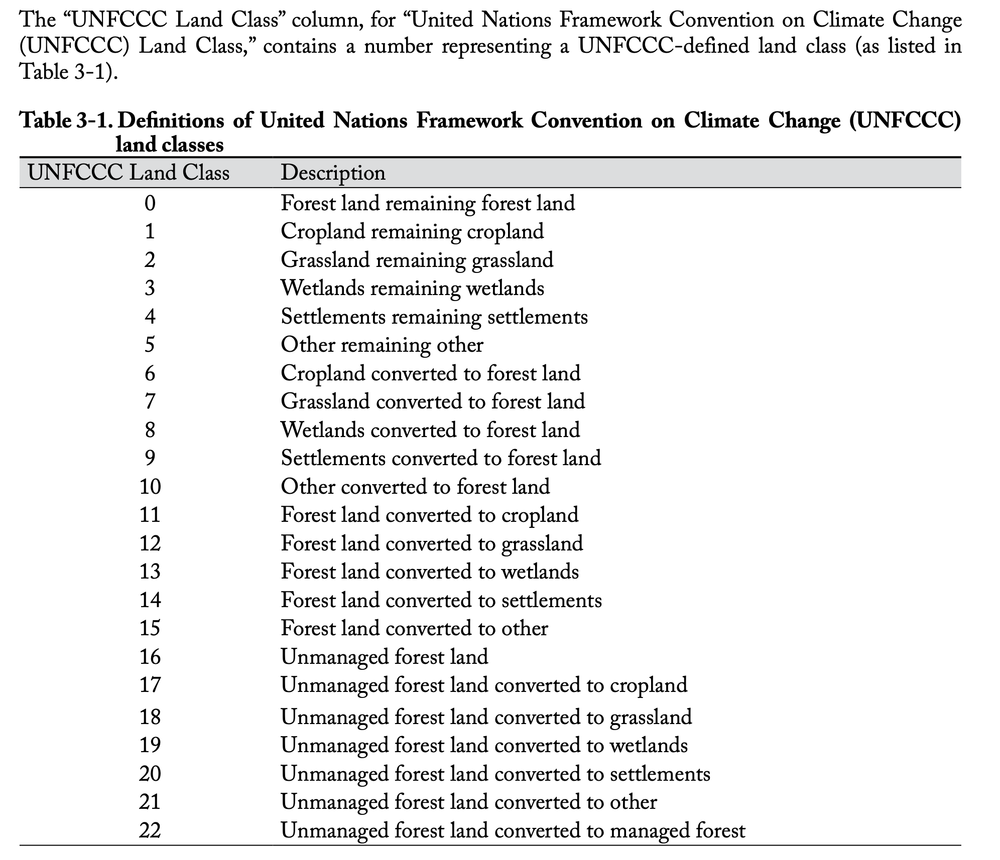

Running ws3 and libcbm as a two-stage sequential pipeline (from scratch)
We run ws3 and libcbm in a two-stage sequential software pipeline. This is the de facto standard way to run CBM models (i.e., run a forest estate model and CBM in a two-stage sequential pipeline, where the output from the first stage becomes the input for the second stage). The pipeline stages can be hard linked (i.e., output from stage-1 model directly piped into stage-2 model at runtime, with no intermediate disk-based data drop), or soft-linked (i.e., output from stage-1 model
exported to disk in a specific format, then this same data is read and imported to stage-2 model). Either way, the result from running the pipeline should be the same. We demonstrate both approaches in this example.
This notebook creates the linkages between ws3 and libcbm from scratch (i.e., all code required to create these linkages is developed directly in this notebook). A complementary notebook (031_ws3_libcbm_sequential-builtin) basically replicates what we do here, but using ws3 built-in CBM linkage functions. One goals of presenting the from scratch linkages is to help users better understand how these linkages are implemented. Note that the linkage implementation presented here
is similar to but distinct from implementation ws3 built-in CBM linkages. The from-scratch implementation show here is in some regards simplified at the expense of generality (i.e., the linkages are only guaranteed to work with our sample dataset we use), in contrast with the built-in linkage functions which should work well for a broad range of ws3 model datasets (but at the expense of more complexity and less transparency).
Note that soft-linked version of this pipeline can be implemented using almost any combinination of forest estate model (e.g., ws3, Patchworks, Woodstock, FPS Atlas, Woodlot, etc.) and CBM (e.g., libcbm, CBM-CFS3, GCBM, spadesCBM, etc.), although an intermediary data munging module might need to be included in the middle of the pipeline to link the two main stages if the forest estate model you are using does not include built-in soft-link data export functions that are compatible with the CBM implementation you are using. The data munging module could be a human manually reformatting raw stage-1 output data using a spreadsheet (simple, but yuck), a Jupyter or R markdown notebook that semi-automates (and documents) the data munging process, or a fully-automated software module.
ws3 does not currently include built-in functions to export data for soft-link to CBM, so we implement some custom data munging code in this notebook (with examples of both soft- and hard-link approaches). One obvious advantage of selecting ws3 and libcbm as the software modules for this two-stage pipeline is that they are both Python packages, which makes it easy to hard-link them with a bit of custom data munging Python code.
Note that we plan to extend ws3 at some point to include built-in libcbm soft-link and hard-link functions (similar to those implemented in this notebook).
Install ws3 and libcbm packages
First, make sure we have the correct versions of ws3 and libcbm installed. Both of these packages are relatively new and under active development, it is best we stick to known-working versions of each package from their respective GitHub repos.
We strongly recommend that you run this notebook in venv-sandboxed Python kernel (see
venv_python_kernel_setupnotebook for an example of how to do this). This will ensure that you are working from a fresh Python package environment, and not wasting time debugging random interactions between this notebook and whatever mishmash of packages you have installed on your system in various parts of your Python path. You have been warned.
[1]:
%load_ext autoreload
%autoreload 2
Optionally, uninstall the ws3 package and replace it with a pointer to this local clone of the GitHub repository code (useful if you want ot tweak the source code for whatever reason).
[2]:
clobber_ws3 = True
if clobber_ws3:
%pip uninstall -y ws3
%pip install -e ..
Found existing installation: ws3 1.1.0.dev0
Uninstalling ws3-1.1.0.dev0:
Successfully uninstalled ws3-1.1.0.dev0
Note: you may need to restart the kernel to use updated packages.
Obtaining file:///home/gep/tmp/ws3
Installing build dependencies ... done
Checking if build backend supports build_editable ... done
Getting requirements to build editable ... done
Installing backend dependencies ... done
Preparing editable metadata (pyproject.toml) ... done
Requirement already satisfied: dill in /home/gep/tmp/ws3/.venv/lib/python3.12/site-packages (from ws3==1.1.0.dev0) (0.4.0)
Requirement already satisfied: fiona in /home/gep/tmp/ws3/.venv/lib/python3.12/site-packages (from ws3==1.1.0.dev0) (1.10.1)
Requirement already satisfied: gurobipy in /home/gep/tmp/ws3/.venv/lib/python3.12/site-packages (from ws3==1.1.0.dev0) (12.0.3)
Requirement already satisfied: highspy in /home/gep/tmp/ws3/.venv/lib/python3.12/site-packages (from ws3==1.1.0.dev0) (1.11.0)
Requirement already satisfied: libcbm in /home/gep/tmp/ws3/.venv/lib/python3.12/site-packages (from ws3==1.1.0.dev0) (2.8.1)
Requirement already satisfied: matplotlib in /home/gep/tmp/ws3/.venv/lib/python3.12/site-packages (from ws3==1.1.0.dev0) (3.10.5)
Requirement already satisfied: numpy>=1.21 in /home/gep/tmp/ws3/.venv/lib/python3.12/site-packages (from ws3==1.1.0.dev0) (2.2.6)
Requirement already satisfied: pandas>=1.3 in /home/gep/tmp/ws3/.venv/lib/python3.12/site-packages (from ws3==1.1.0.dev0) (2.3.1)
Requirement already satisfied: profilehooks in /home/gep/tmp/ws3/.venv/lib/python3.12/site-packages (from ws3==1.1.0.dev0) (1.13.0)
Requirement already satisfied: pulp in /home/gep/tmp/ws3/.venv/lib/python3.12/site-packages (from ws3==1.1.0.dev0) (3.2.2)
Requirement already satisfied: rasterio in /home/gep/tmp/ws3/.venv/lib/python3.12/site-packages (from ws3==1.1.0.dev0) (1.4.3)
Requirement already satisfied: scipy>=1.7 in /home/gep/tmp/ws3/.venv/lib/python3.12/site-packages (from ws3==1.1.0.dev0) (1.16.1)
Requirement already satisfied: python-dateutil>=2.8.2 in /home/gep/tmp/ws3/.venv/lib/python3.12/site-packages (from pandas>=1.3->ws3==1.1.0.dev0) (2.9.0.post0)
Requirement already satisfied: pytz>=2020.1 in /home/gep/tmp/ws3/.venv/lib/python3.12/site-packages (from pandas>=1.3->ws3==1.1.0.dev0) (2025.2)
Requirement already satisfied: tzdata>=2022.7 in /home/gep/tmp/ws3/.venv/lib/python3.12/site-packages (from pandas>=1.3->ws3==1.1.0.dev0) (2025.2)
Requirement already satisfied: six>=1.5 in /home/gep/tmp/ws3/.venv/lib/python3.12/site-packages (from python-dateutil>=2.8.2->pandas>=1.3->ws3==1.1.0.dev0) (1.17.0)
Requirement already satisfied: attrs>=19.2.0 in /home/gep/tmp/ws3/.venv/lib/python3.12/site-packages (from fiona->ws3==1.1.0.dev0) (25.3.0)
Requirement already satisfied: certifi in /home/gep/tmp/ws3/.venv/lib/python3.12/site-packages (from fiona->ws3==1.1.0.dev0) (2025.8.3)
Requirement already satisfied: click~=8.0 in /home/gep/tmp/ws3/.venv/lib/python3.12/site-packages (from fiona->ws3==1.1.0.dev0) (8.2.1)
Requirement already satisfied: click-plugins>=1.0 in /home/gep/tmp/ws3/.venv/lib/python3.12/site-packages (from fiona->ws3==1.1.0.dev0) (1.1.1.2)
Requirement already satisfied: cligj>=0.5 in /home/gep/tmp/ws3/.venv/lib/python3.12/site-packages (from fiona->ws3==1.1.0.dev0) (0.7.2)
Requirement already satisfied: numexpr>=2.8.7 in /home/gep/tmp/ws3/.venv/lib/python3.12/site-packages (from libcbm->ws3==1.1.0.dev0) (2.11.0)
Requirement already satisfied: numba in /home/gep/tmp/ws3/.venv/lib/python3.12/site-packages (from libcbm->ws3==1.1.0.dev0) (0.61.2)
Requirement already satisfied: pyyaml in /home/gep/tmp/ws3/.venv/lib/python3.12/site-packages (from libcbm->ws3==1.1.0.dev0) (6.0.2)
Requirement already satisfied: mock in /home/gep/tmp/ws3/.venv/lib/python3.12/site-packages (from libcbm->ws3==1.1.0.dev0) (5.2.0)
Requirement already satisfied: openpyxl in /home/gep/tmp/ws3/.venv/lib/python3.12/site-packages (from libcbm->ws3==1.1.0.dev0) (3.1.5)
Requirement already satisfied: contourpy>=1.0.1 in /home/gep/tmp/ws3/.venv/lib/python3.12/site-packages (from matplotlib->ws3==1.1.0.dev0) (1.3.3)
Requirement already satisfied: cycler>=0.10 in /home/gep/tmp/ws3/.venv/lib/python3.12/site-packages (from matplotlib->ws3==1.1.0.dev0) (0.12.1)
Requirement already satisfied: fonttools>=4.22.0 in /home/gep/tmp/ws3/.venv/lib/python3.12/site-packages (from matplotlib->ws3==1.1.0.dev0) (4.59.0)
Requirement already satisfied: kiwisolver>=1.3.1 in /home/gep/tmp/ws3/.venv/lib/python3.12/site-packages (from matplotlib->ws3==1.1.0.dev0) (1.4.8)
Requirement already satisfied: packaging>=20.0 in /home/gep/tmp/ws3/.venv/lib/python3.12/site-packages (from matplotlib->ws3==1.1.0.dev0) (25.0)
Requirement already satisfied: pillow>=8 in /home/gep/tmp/ws3/.venv/lib/python3.12/site-packages (from matplotlib->ws3==1.1.0.dev0) (11.3.0)
Requirement already satisfied: pyparsing>=2.3.1 in /home/gep/tmp/ws3/.venv/lib/python3.12/site-packages (from matplotlib->ws3==1.1.0.dev0) (3.2.3)
Requirement already satisfied: llvmlite<0.45,>=0.44.0dev0 in /home/gep/tmp/ws3/.venv/lib/python3.12/site-packages (from numba->libcbm->ws3==1.1.0.dev0) (0.44.0)
Requirement already satisfied: et-xmlfile in /home/gep/tmp/ws3/.venv/lib/python3.12/site-packages (from openpyxl->libcbm->ws3==1.1.0.dev0) (2.0.0)
Requirement already satisfied: affine in /home/gep/tmp/ws3/.venv/lib/python3.12/site-packages (from rasterio->ws3==1.1.0.dev0) (2.4.0)
Building wheels for collected packages: ws3
Building editable for ws3 (pyproject.toml) ... done
Created wheel for ws3: filename=ws3-1.1.0.dev0-py3-none-any.whl size=4136 sha256=5df49d1809d2f15004f3046010971c142390fb47fb3bfa7620b09e11903424a7
Stored in directory: /tmp/pip-ephem-wheel-cache-11t0_8gk/wheels/fa/4b/10/3fe4b92a02fb87987a6fe53a10fad0a22a781bf98cd7b63f17
Successfully built ws3
Installing collected packages: ws3
Successfully installed ws3-1.1.0.dev0
Note: you may need to restart the kernel to use updated packages.
Use pip to install Python packages listed in requirements.txt (some extra packages needed for example notebooks to run correctly).
[3]:
%pip install -r requirements.txt
Requirement already satisfied: seaborn in /home/gep/tmp/ws3/.venv/lib/python3.12/site-packages (from -r requirements.txt (line 1)) (0.13.2)
Requirement already satisfied: geopandas in /home/gep/tmp/ws3/.venv/lib/python3.12/site-packages (from -r requirements.txt (line 2)) (1.1.1)
Requirement already satisfied: ipywidgets in /home/gep/tmp/ws3/.venv/lib/python3.12/site-packages (from -r requirements.txt (line 3)) (8.1.7)
Requirement already satisfied: numpy!=1.24.0,>=1.20 in /home/gep/tmp/ws3/.venv/lib/python3.12/site-packages (from seaborn->-r requirements.txt (line 1)) (2.2.6)
Requirement already satisfied: pandas>=1.2 in /home/gep/tmp/ws3/.venv/lib/python3.12/site-packages (from seaborn->-r requirements.txt (line 1)) (2.3.1)
Requirement already satisfied: matplotlib!=3.6.1,>=3.4 in /home/gep/tmp/ws3/.venv/lib/python3.12/site-packages (from seaborn->-r requirements.txt (line 1)) (3.10.5)
Requirement already satisfied: pyogrio>=0.7.2 in /home/gep/tmp/ws3/.venv/lib/python3.12/site-packages (from geopandas->-r requirements.txt (line 2)) (0.11.1)
Requirement already satisfied: packaging in /home/gep/tmp/ws3/.venv/lib/python3.12/site-packages (from geopandas->-r requirements.txt (line 2)) (25.0)
Requirement already satisfied: pyproj>=3.5.0 in /home/gep/tmp/ws3/.venv/lib/python3.12/site-packages (from geopandas->-r requirements.txt (line 2)) (3.7.1)
Requirement already satisfied: shapely>=2.0.0 in /home/gep/tmp/ws3/.venv/lib/python3.12/site-packages (from geopandas->-r requirements.txt (line 2)) (2.1.1)
Requirement already satisfied: comm>=0.1.3 in /home/gep/tmp/ws3/.venv/lib/python3.12/site-packages (from ipywidgets->-r requirements.txt (line 3)) (0.2.3)
Requirement already satisfied: ipython>=6.1.0 in /home/gep/tmp/ws3/.venv/lib/python3.12/site-packages (from ipywidgets->-r requirements.txt (line 3)) (9.4.0)
Requirement already satisfied: traitlets>=4.3.1 in /home/gep/tmp/ws3/.venv/lib/python3.12/site-packages (from ipywidgets->-r requirements.txt (line 3)) (5.14.3)
Requirement already satisfied: widgetsnbextension~=4.0.14 in /home/gep/tmp/ws3/.venv/lib/python3.12/site-packages (from ipywidgets->-r requirements.txt (line 3)) (4.0.14)
Requirement already satisfied: jupyterlab_widgets~=3.0.15 in /home/gep/tmp/ws3/.venv/lib/python3.12/site-packages (from ipywidgets->-r requirements.txt (line 3)) (3.0.15)
Requirement already satisfied: decorator in /home/gep/tmp/ws3/.venv/lib/python3.12/site-packages (from ipython>=6.1.0->ipywidgets->-r requirements.txt (line 3)) (5.2.1)
Requirement already satisfied: ipython-pygments-lexers in /home/gep/tmp/ws3/.venv/lib/python3.12/site-packages (from ipython>=6.1.0->ipywidgets->-r requirements.txt (line 3)) (1.1.1)
Requirement already satisfied: jedi>=0.16 in /home/gep/tmp/ws3/.venv/lib/python3.12/site-packages (from ipython>=6.1.0->ipywidgets->-r requirements.txt (line 3)) (0.19.2)
Requirement already satisfied: matplotlib-inline in /home/gep/tmp/ws3/.venv/lib/python3.12/site-packages (from ipython>=6.1.0->ipywidgets->-r requirements.txt (line 3)) (0.1.7)
Requirement already satisfied: pexpect>4.3 in /home/gep/tmp/ws3/.venv/lib/python3.12/site-packages (from ipython>=6.1.0->ipywidgets->-r requirements.txt (line 3)) (4.9.0)
Requirement already satisfied: prompt_toolkit<3.1.0,>=3.0.41 in /home/gep/tmp/ws3/.venv/lib/python3.12/site-packages (from ipython>=6.1.0->ipywidgets->-r requirements.txt (line 3)) (3.0.51)
Requirement already satisfied: pygments>=2.4.0 in /home/gep/tmp/ws3/.venv/lib/python3.12/site-packages (from ipython>=6.1.0->ipywidgets->-r requirements.txt (line 3)) (2.19.2)
Requirement already satisfied: stack_data in /home/gep/tmp/ws3/.venv/lib/python3.12/site-packages (from ipython>=6.1.0->ipywidgets->-r requirements.txt (line 3)) (0.6.3)
Requirement already satisfied: wcwidth in /home/gep/tmp/ws3/.venv/lib/python3.12/site-packages (from prompt_toolkit<3.1.0,>=3.0.41->ipython>=6.1.0->ipywidgets->-r requirements.txt (line 3)) (0.2.13)
Requirement already satisfied: parso<0.9.0,>=0.8.4 in /home/gep/tmp/ws3/.venv/lib/python3.12/site-packages (from jedi>=0.16->ipython>=6.1.0->ipywidgets->-r requirements.txt (line 3)) (0.8.4)
Requirement already satisfied: contourpy>=1.0.1 in /home/gep/tmp/ws3/.venv/lib/python3.12/site-packages (from matplotlib!=3.6.1,>=3.4->seaborn->-r requirements.txt (line 1)) (1.3.3)
Requirement already satisfied: cycler>=0.10 in /home/gep/tmp/ws3/.venv/lib/python3.12/site-packages (from matplotlib!=3.6.1,>=3.4->seaborn->-r requirements.txt (line 1)) (0.12.1)
Requirement already satisfied: fonttools>=4.22.0 in /home/gep/tmp/ws3/.venv/lib/python3.12/site-packages (from matplotlib!=3.6.1,>=3.4->seaborn->-r requirements.txt (line 1)) (4.59.0)
Requirement already satisfied: kiwisolver>=1.3.1 in /home/gep/tmp/ws3/.venv/lib/python3.12/site-packages (from matplotlib!=3.6.1,>=3.4->seaborn->-r requirements.txt (line 1)) (1.4.8)
Requirement already satisfied: pillow>=8 in /home/gep/tmp/ws3/.venv/lib/python3.12/site-packages (from matplotlib!=3.6.1,>=3.4->seaborn->-r requirements.txt (line 1)) (11.3.0)
Requirement already satisfied: pyparsing>=2.3.1 in /home/gep/tmp/ws3/.venv/lib/python3.12/site-packages (from matplotlib!=3.6.1,>=3.4->seaborn->-r requirements.txt (line 1)) (3.2.3)
Requirement already satisfied: python-dateutil>=2.7 in /home/gep/tmp/ws3/.venv/lib/python3.12/site-packages (from matplotlib!=3.6.1,>=3.4->seaborn->-r requirements.txt (line 1)) (2.9.0.post0)
Requirement already satisfied: pytz>=2020.1 in /home/gep/tmp/ws3/.venv/lib/python3.12/site-packages (from pandas>=1.2->seaborn->-r requirements.txt (line 1)) (2025.2)
Requirement already satisfied: tzdata>=2022.7 in /home/gep/tmp/ws3/.venv/lib/python3.12/site-packages (from pandas>=1.2->seaborn->-r requirements.txt (line 1)) (2025.2)
Requirement already satisfied: ptyprocess>=0.5 in /home/gep/tmp/ws3/.venv/lib/python3.12/site-packages (from pexpect>4.3->ipython>=6.1.0->ipywidgets->-r requirements.txt (line 3)) (0.7.0)
Requirement already satisfied: certifi in /home/gep/tmp/ws3/.venv/lib/python3.12/site-packages (from pyogrio>=0.7.2->geopandas->-r requirements.txt (line 2)) (2025.8.3)
Requirement already satisfied: six>=1.5 in /home/gep/tmp/ws3/.venv/lib/python3.12/site-packages (from python-dateutil>=2.7->matplotlib!=3.6.1,>=3.4->seaborn->-r requirements.txt (line 1)) (1.17.0)
Requirement already satisfied: executing>=1.2.0 in /home/gep/tmp/ws3/.venv/lib/python3.12/site-packages (from stack_data->ipython>=6.1.0->ipywidgets->-r requirements.txt (line 3)) (2.2.0)
Requirement already satisfied: asttokens>=2.1.0 in /home/gep/tmp/ws3/.venv/lib/python3.12/site-packages (from stack_data->ipython>=6.1.0->ipywidgets->-r requirements.txt (line 3)) (3.0.0)
Requirement already satisfied: pure-eval in /home/gep/tmp/ws3/.venv/lib/python3.12/site-packages (from stack_data->ipython>=6.1.0->ipywidgets->-r requirements.txt (line 3)) (0.2.3)
Note: you may need to restart the kernel to use updated packages.
[4]:
import libcbm
libcbm.__path__
[4]:
['/home/gep/tmp/ws3/.venv/lib/python3.12/site-packages/libcbm']
Create a ForestModel instance by loading Woodstock-formatted input files.
[5]:
import ws3.forest
[6]:
base_year = 2020
horizon = 10
period_length = 10
max_age = 1000
tvy_name = "totvol"
[7]:
fm = ws3.forest.ForestModel(model_name="tsa24_clipped",
model_path="data/woodstock_model_files_tsa24_clipped",
base_year=base_year,
horizon=horizon,
period_length=period_length,
max_age=max_age)
fm.import_landscape_section()
fm.import_areas_section(convert_periods_to_years=period_length)
fm.import_yields_section(convert_periods_to_years=period_length)
fm.import_actions_section(convert_periods_to_years=period_length)
fm.import_transitions_section(convert_periods_to_years=period_length)
fm.initialize_areas()
fm.add_null_action()
fm.reset_actions()
Schedule some harvesting in our ws3.ForestModel instance using the self-parametrising priority queue heuristic defined in the local util module (just so we have something interesting to push through libcbm).
[8]:
from util import schedule_harvest_areacontrol
[9]:
sch = schedule_harvest_areacontrol(fm)
[10]:
from util import compile_scenario, plot_scenario
df = compile_scenario(fm)
plot_scenario(df)
[10]:
(<Figure size 1200x400 with 3 Axes>,
array([<Axes: title={'center': 'Harvested area (ha)'}>,
<Axes: title={'center': 'Harvested volume (m3)'}>,
<Axes: title={'center': 'Growing Stock (m3)'}>], dtype=object))

Hard-link ForestModel to libcbm
Next, we compile some of the data from our ForestModel instance as pandas.DataFrame tables in the form expected by libcbm.input.sit.sit_cbm_factory.
[11]:
import pandas as pd
Show hints on expected data table formatting for the sit_reader.parse function.
Compile yield data
[12]:
species_classifier_colname = "species"
leading_species_classifier_colname = "leading_species"
[13]:
nv = 100 # this MIGHT have to match the number of ages classes in sit_age_classes (not sure)
[14]:
data = {"theme0":[], "theme1":[], "theme2":[], "theme3":[], "theme4":[],
species_classifier_colname:[], leading_species_classifier_colname:[],
**{"v%i" % i:[] for i in range(nv + 1)}}
Load CANFI species data table.
[15]:
canfi_species = pd.read_csv("data/canfi_species.csv")
canfi_species.set_index("canfi_species", inplace=True)
[16]:
leading_species_from_dtype_key = {} # we will need this later (as leading_species needs to be a "classifier" in libcbm
for dtype_key, ytype, curves in fm.yields[:-1]:
if ytype != "a": continue
for yname, curve in curves:
for i in range(5): data["theme%i" % i].append(dtype_key[i])
species = "softwood" if int(yname[-4:]) < 1200 else "hardwood" # CANFI species codes happen to be sorted by softwood/hardwood
leading_species_from_dtype_key[dtype_key] = species
data[species_classifier_colname].append(species)
data[leading_species_classifier_colname].append(species) # just a weird libcbm data model thing...
for i in range(nv + 1): data["v%i" % i].append(curve[i * fm.period_length])
[17]:
sit_yield = pd.DataFrame(data)
[18]:
sit_yield
[18]:
| theme0 | theme1 | theme2 | theme3 | theme4 | species | leading_species | v0 | v1 | v2 | ... | v91 | v92 | v93 | v94 | v95 | v96 | v97 | v98 | v99 | v100 | |
|---|---|---|---|---|---|---|---|---|---|---|---|---|---|---|---|---|---|---|---|---|---|
| 0 | ? | ? | 2401000 | ? | 2401000 | softwood | softwood | 0.0 | 0.0 | 1.0 | ... | 145.0 | 145.0 | 145.0 | 145.0 | 145.0 | 145.0 | 145.0 | 145.0 | 145.0 | 145.0 |
| 1 | ? | ? | 2401000 | ? | 2401000 | softwood | softwood | 0.0 | 0.0 | 1.0 | ... | 145.0 | 145.0 | 145.0 | 145.0 | 145.0 | 145.0 | 145.0 | 145.0 | 145.0 | 145.0 |
| 2 | ? | ? | 2402000 | ? | 2402000 | softwood | softwood | 0.0 | 4.0 | 13.0 | ... | 235.0 | 235.0 | 235.0 | 235.0 | 235.0 | 235.0 | 235.0 | 235.0 | 235.0 | 235.0 |
| 3 | ? | ? | 2402000 | ? | 2422000 | softwood | softwood | 0.0 | 0.0 | 0.0 | ... | 336.0 | 336.0 | 336.0 | 336.0 | 336.0 | 336.0 | 336.0 | 336.0 | 336.0 | 336.0 |
| 4 | ? | ? | 2403000 | ? | 2403000 | softwood | softwood | 0.0 | 3.0 | 15.0 | ... | 246.0 | 246.0 | 246.0 | 246.0 | 246.0 | 246.0 | 246.0 | 246.0 | 246.0 | 246.0 |
| 5 | ? | ? | 2403000 | ? | 2423000 | softwood | softwood | 0.0 | 0.0 | 0.0 | ... | 433.0 | 433.0 | 433.0 | 433.0 | 433.0 | 433.0 | 433.0 | 433.0 | 433.0 | 433.0 |
| 6 | ? | ? | 2401001 | ? | 2401001 | softwood | softwood | 0.0 | 0.0 | 0.0 | ... | 97.0 | 97.0 | 97.0 | 97.0 | 97.0 | 97.0 | 97.0 | 97.0 | 97.0 | 97.0 |
| 7 | ? | ? | 2401001 | ? | 2401001 | softwood | softwood | 0.0 | 0.0 | 0.0 | ... | 97.0 | 97.0 | 97.0 | 97.0 | 97.0 | 97.0 | 97.0 | 97.0 | 97.0 | 97.0 |
| 8 | ? | ? | 2402001 | ? | 2402001 | softwood | softwood | 0.0 | 0.0 | 0.0 | ... | 144.0 | 144.0 | 144.0 | 144.0 | 144.0 | 144.0 | 144.0 | 144.0 | 144.0 | 144.0 |
| 9 | ? | ? | 2402001 | ? | 2402001 | softwood | softwood | 0.0 | 0.0 | 0.0 | ... | 144.0 | 144.0 | 144.0 | 144.0 | 144.0 | 144.0 | 144.0 | 144.0 | 144.0 | 144.0 |
| 10 | ? | ? | 2403001 | ? | 2403001 | softwood | softwood | 0.0 | 0.0 | 0.0 | ... | 190.0 | 190.0 | 190.0 | 190.0 | 190.0 | 190.0 | 190.0 | 190.0 | 190.0 | 190.0 |
| 11 | ? | ? | 2403001 | ? | 2423001 | softwood | softwood | 0.0 | 0.0 | 0.0 | ... | 340.0 | 340.0 | 340.0 | 340.0 | 340.0 | 340.0 | 340.0 | 340.0 | 340.0 | 340.0 |
| 12 | ? | ? | 2401002 | ? | 2401002 | softwood | softwood | 0.0 | 0.0 | 4.0 | ... | 127.0 | 127.0 | 127.0 | 127.0 | 127.0 | 127.0 | 127.0 | 127.0 | 127.0 | 127.0 |
| 13 | ? | ? | 2401002 | ? | 2421002 | softwood | softwood | 0.0 | 0.0 | 0.0 | ... | 196.0 | 196.0 | 196.0 | 196.0 | 196.0 | 196.0 | 196.0 | 196.0 | 196.0 | 196.0 |
| 14 | ? | ? | 2402002 | ? | 2402002 | softwood | softwood | 0.0 | 5.0 | 18.0 | ... | 194.0 | 194.0 | 194.0 | 194.0 | 194.0 | 194.0 | 194.0 | 194.0 | 194.0 | 194.0 |
| 15 | ? | ? | 2402002 | ? | 2422002 | softwood | softwood | 0.0 | 0.0 | 0.0 | ... | 293.0 | 293.0 | 293.0 | 293.0 | 293.0 | 293.0 | 293.0 | 293.0 | 293.0 | 293.0 |
| 16 | ? | ? | 2403002 | ? | 2403002 | softwood | softwood | 0.0 | 8.0 | 29.0 | ... | 277.0 | 277.0 | 277.0 | 277.0 | 277.0 | 277.0 | 277.0 | 277.0 | 277.0 | 277.0 |
| 17 | ? | ? | 2403002 | ? | 2423002 | softwood | softwood | 0.0 | 0.0 | 0.0 | ... | 428.0 | 428.0 | 428.0 | 428.0 | 428.0 | 428.0 | 428.0 | 428.0 | 428.0 | 428.0 |
| 18 | ? | ? | 2401003 | ? | 2401003 | softwood | softwood | 0.0 | 0.0 | 0.0 | ... | 150.0 | 150.0 | 150.0 | 150.0 | 150.0 | 150.0 | 150.0 | 150.0 | 150.0 | 150.0 |
| 19 | ? | ? | 2401003 | ? | 2401003 | softwood | softwood | 0.0 | 0.0 | 0.0 | ... | 150.0 | 150.0 | 150.0 | 150.0 | 150.0 | 150.0 | 150.0 | 150.0 | 150.0 | 150.0 |
| 20 | ? | ? | 2402003 | ? | 2402003 | softwood | softwood | 0.0 | 0.0 | 0.0 | ... | 215.0 | 215.0 | 215.0 | 215.0 | 215.0 | 215.0 | 215.0 | 215.0 | 215.0 | 215.0 |
| 21 | ? | ? | 2402003 | ? | 2422003 | softwood | softwood | 0.0 | 0.0 | 0.0 | ... | 358.0 | 358.0 | 358.0 | 358.0 | 358.0 | 358.0 | 358.0 | 358.0 | 358.0 | 358.0 |
| 22 | ? | ? | 2403003 | ? | 2403003 | softwood | softwood | 0.0 | 6.0 | 25.0 | ... | 270.0 | 270.0 | 270.0 | 270.0 | 270.0 | 270.0 | 270.0 | 270.0 | 270.0 | 270.0 |
| 23 | ? | ? | 2403003 | ? | 2423003 | softwood | softwood | 0.0 | 0.0 | 0.0 | ... | 476.0 | 476.0 | 476.0 | 476.0 | 476.0 | 476.0 | 476.0 | 476.0 | 476.0 | 476.0 |
| 24 | ? | ? | 2401004 | ? | 2401004 | softwood | softwood | 0.0 | 0.0 | 0.0 | ... | 158.0 | 158.0 | 158.0 | 158.0 | 158.0 | 158.0 | 158.0 | 158.0 | 158.0 | 158.0 |
| 25 | ? | ? | 2401004 | ? | 2401004 | softwood | softwood | 0.0 | 0.0 | 0.0 | ... | 158.0 | 158.0 | 158.0 | 158.0 | 158.0 | 158.0 | 158.0 | 158.0 | 158.0 | 158.0 |
| 26 | ? | ? | 2402004 | ? | 2402004 | softwood | softwood | 0.0 | 0.0 | 0.0 | ... | 209.0 | 209.0 | 209.0 | 209.0 | 209.0 | 209.0 | 209.0 | 209.0 | 209.0 | 209.0 |
| 27 | ? | ? | 2402004 | ? | 2422004 | softwood | softwood | 0.0 | 0.0 | 0.0 | ... | 304.0 | 304.0 | 304.0 | 304.0 | 304.0 | 304.0 | 304.0 | 304.0 | 304.0 | 304.0 |
| 28 | ? | ? | 2403004 | ? | 2403004 | softwood | softwood | 0.0 | 0.0 | 0.0 | ... | 255.0 | 255.0 | 255.0 | 255.0 | 255.0 | 255.0 | 255.0 | 255.0 | 255.0 | 255.0 |
| 29 | ? | ? | 2403004 | ? | 2423004 | softwood | softwood | 0.0 | 0.0 | 0.0 | ... | 394.0 | 394.0 | 394.0 | 394.0 | 394.0 | 394.0 | 394.0 | 394.0 | 394.0 | 394.0 |
| 30 | ? | ? | 2401005 | ? | 2401005 | hardwood | hardwood | 0.0 | 2.0 | 12.0 | ... | 105.0 | 105.0 | 105.0 | 105.0 | 105.0 | 105.0 | 105.0 | 105.0 | 105.0 | 105.0 |
| 31 | ? | ? | 2401005 | ? | 2401005 | hardwood | hardwood | 0.0 | 2.0 | 12.0 | ... | 105.0 | 105.0 | 105.0 | 105.0 | 105.0 | 105.0 | 105.0 | 105.0 | 105.0 | 105.0 |
| 32 | ? | ? | 2402005 | ? | 2402005 | hardwood | hardwood | 0.0 | 8.0 | 30.0 | ... | 118.0 | 118.0 | 118.0 | 118.0 | 118.0 | 118.0 | 118.0 | 118.0 | 118.0 | 118.0 |
| 33 | ? | ? | 2402005 | ? | 2402005 | hardwood | hardwood | 0.0 | 8.0 | 30.0 | ... | 118.0 | 118.0 | 118.0 | 118.0 | 118.0 | 118.0 | 118.0 | 118.0 | 118.0 | 118.0 |
| 34 | ? | ? | 2403005 | ? | 2403005 | hardwood | hardwood | 0.0 | 10.0 | 37.0 | ... | 135.0 | 135.0 | 135.0 | 135.0 | 135.0 | 135.0 | 135.0 | 135.0 | 135.0 | 135.0 |
| 35 | ? | ? | 2403005 | ? | 2403005 | hardwood | hardwood | 0.0 | 10.0 | 37.0 | ... | 135.0 | 135.0 | 135.0 | 135.0 | 135.0 | 135.0 | 135.0 | 135.0 | 135.0 | 135.0 |
| 36 | ? | ? | 2401006 | ? | 2401006 | hardwood | hardwood | 0.0 | 4.0 | 17.0 | ... | 127.0 | 127.0 | 127.0 | 127.0 | 127.0 | 127.0 | 127.0 | 127.0 | 127.0 | 127.0 |
| 37 | ? | ? | 2401006 | ? | 2401006 | hardwood | hardwood | 0.0 | 4.0 | 17.0 | ... | 127.0 | 127.0 | 127.0 | 127.0 | 127.0 | 127.0 | 127.0 | 127.0 | 127.0 | 127.0 |
| 38 | ? | ? | 2402006 | ? | 2402006 | hardwood | hardwood | 0.0 | 8.0 | 30.0 | ... | 144.0 | 144.0 | 144.0 | 144.0 | 144.0 | 144.0 | 144.0 | 144.0 | 144.0 | 144.0 |
| 39 | ? | ? | 2402006 | ? | 2402006 | hardwood | hardwood | 0.0 | 8.0 | 30.0 | ... | 144.0 | 144.0 | 144.0 | 144.0 | 144.0 | 144.0 | 144.0 | 144.0 | 144.0 | 144.0 |
| 40 | ? | ? | 2403006 | ? | 2403006 | hardwood | hardwood | 0.0 | 9.0 | 35.0 | ... | 163.0 | 163.0 | 163.0 | 163.0 | 163.0 | 163.0 | 163.0 | 163.0 | 163.0 | 163.0 |
| 41 | ? | ? | 2403006 | ? | 2403006 | hardwood | hardwood | 0.0 | 9.0 | 35.0 | ... | 163.0 | 163.0 | 163.0 | 163.0 | 163.0 | 163.0 | 163.0 | 163.0 | 163.0 | 163.0 |
| 42 | ? | ? | 2401007 | ? | 2401007 | softwood | softwood | 0.0 | 0.0 | 0.0 | ... | 178.0 | 178.0 | 178.0 | 178.0 | 178.0 | 178.0 | 178.0 | 178.0 | 178.0 | 178.0 |
| 43 | ? | ? | 2401007 | ? | 2421007 | softwood | softwood | 0.0 | 0.0 | 0.0 | ... | 353.0 | 353.0 | 353.0 | 353.0 | 353.0 | 353.0 | 353.0 | 353.0 | 353.0 | 353.0 |
| 44 | ? | ? | 2402007 | ? | 2402007 | softwood | softwood | 0.0 | 0.0 | 2.0 | ... | 209.0 | 209.0 | 209.0 | 209.0 | 209.0 | 209.0 | 209.0 | 209.0 | 209.0 | 209.0 |
| 45 | ? | ? | 2402007 | ? | 2422007 | softwood | softwood | 0.0 | 0.0 | 0.0 | ... | 415.0 | 415.0 | 415.0 | 415.0 | 415.0 | 415.0 | 415.0 | 415.0 | 415.0 | 415.0 |
| 46 | ? | ? | 2403007 | ? | 2403007 | softwood | softwood | 0.0 | 6.0 | 28.0 | ... | 269.0 | 269.0 | 269.0 | 269.0 | 269.0 | 269.0 | 269.0 | 269.0 | 269.0 | 269.0 |
| 47 | ? | ? | 2403007 | ? | 2423007 | softwood | softwood | 0.0 | 0.0 | 0.0 | ... | 535.0 | 535.0 | 535.0 | 535.0 | 535.0 | 535.0 | 535.0 | 535.0 | 535.0 | 535.0 |
48 rows × 108 columns
Compile inventory.
ws3 “themes” map 1:1 to libcbm “classifiers”.
Start by loading the Woodstock-formatted initial inventory input file.
[19]:
names = ["_", "theme0", "theme1", "theme2", "theme3", "theme4", "age", "area"]
sit_inventory = pd.read_csv("data/woodstock_model_files_tsa24_clipped/tsa24_clipped.are",
delimiter=" ", header=None, names=names)
[20]:
sit_inventory.head()
[20]:
| _ | theme0 | theme1 | theme2 | theme3 | theme4 | age | area | |
|---|---|---|---|---|---|---|---|---|
| 0 | *A | tsa24_clipped | 0 | 2401000 | 100 | 2401000 | 85 | 15.182275 |
| 1 | *A | tsa24_clipped | 0 | 2401000 | 100 | 2401000 | 95 | 20.653789 |
| 2 | *A | tsa24_clipped | 0 | 2401000 | 100 | 2401000 | 105 | 1.109374 |
| 3 | *A | tsa24_clipped | 0 | 2401000 | 100 | 2401000 | 125 | 25.731748 |
| 4 | *A | tsa24_clipped | 0 | 2401000 | 100 | 2401000 | 135 | 62.023828 |
Drop useless column.
[21]:
sit_inventory.drop('_', axis=1, inplace=True)
Add missing columns. First, we define a helper function that we cna use here (and later) to deduce the correct leading_species value (i.e., the sixth classifier) from a pandas.Series that includes the 5 themes in our ws3 model.
[22]:
def _leading_species(dtype_key):
for mask, leading_species in leading_species_from_dtype_key.items():
if fm.match_mask(mask, dtype_key):
return leading_species
def __leading_species(r):
dtype_key = tuple(str(r["theme%i" % i]) for i in range(5))
return _leading_species(dtype_key)
[23]:
sit_inventory[species_classifier_colname] = sit_inventory.apply(__leading_species, axis=1)
sit_inventory["using_age_class"] = "FALSE"
sit_inventory["delay"] = 0
sit_inventory["landclass"] = 0
sit_inventory["historic_disturbance"] = "fire"
sit_inventory["last_pass_disturbance"] = sit_inventory.apply(lambda r: "fire" if r["theme2"] == r["theme4"] else "harvest", axis=1)
The landclass column values should contain an integer in the range $[0, 22], which CBM maps to one of 23 UNFCCC land classes (see Table 3-1 in the the CBM-CFS3 user guide, shown below for convenience). We just use a value of 0 for all inventory records (i.e., “Forest land remaining forest land”).
The dist1 and dist2 values in the last_pass_disturbance column correspond to fire and harvesting (and match the values used in the disturbance_types table defined a few cells down).

Shuffle columns to match order expected by libcbm.
[24]:
names = ["theme0", "theme1", "theme2", "theme3", "theme4", species_classifier_colname,
"using_age_class", "age", "area", "delay", "landclass",
"historic_disturbance", "last_pass_disturbance"]
sit_inventory = sit_inventory[names]
[25]:
sit_inventory
[25]:
| theme0 | theme1 | theme2 | theme3 | theme4 | species | using_age_class | age | area | delay | landclass | historic_disturbance | last_pass_disturbance | |
|---|---|---|---|---|---|---|---|---|---|---|---|---|---|
| 0 | tsa24_clipped | 0 | 2401000 | 100 | 2401000 | softwood | FALSE | 85 | 15.182275 | 0 | 0 | fire | fire |
| 1 | tsa24_clipped | 0 | 2401000 | 100 | 2401000 | softwood | FALSE | 95 | 20.653789 | 0 | 0 | fire | fire |
| 2 | tsa24_clipped | 0 | 2401000 | 100 | 2401000 | softwood | FALSE | 105 | 1.109374 | 0 | 0 | fire | fire |
| 3 | tsa24_clipped | 0 | 2401000 | 100 | 2401000 | softwood | FALSE | 125 | 25.731748 | 0 | 0 | fire | fire |
| 4 | tsa24_clipped | 0 | 2401000 | 100 | 2401000 | softwood | FALSE | 135 | 62.023828 | 0 | 0 | fire | fire |
| 5 | tsa24_clipped | 0 | 2401000 | 100 | 2401000 | softwood | FALSE | 145 | 45.322290 | 0 | 0 | fire | fire |
| 6 | tsa24_clipped | 0 | 2401000 | 100 | 2401000 | softwood | FALSE | 155 | 3.052804 | 0 | 0 | fire | fire |
| 7 | tsa24_clipped | 0 | 2402005 | 1201 | 2402005 | hardwood | FALSE | 85 | 1.812979 | 0 | 0 | fire | fire |
| 8 | tsa24_clipped | 1 | 2401002 | 204 | 2401002 | softwood | FALSE | 78 | 103.767403 | 0 | 0 | fire | fire |
| 9 | tsa24_clipped | 1 | 2401002 | 204 | 2401002 | softwood | FALSE | 80 | 4.173147 | 0 | 0 | fire | fire |
| 10 | tsa24_clipped | 1 | 2401002 | 204 | 2401002 | softwood | FALSE | 85 | 282.129636 | 0 | 0 | fire | fire |
| 11 | tsa24_clipped | 1 | 2401002 | 204 | 2401002 | softwood | FALSE | 91 | 73.102156 | 0 | 0 | fire | fire |
| 12 | tsa24_clipped | 1 | 2401002 | 204 | 2401002 | softwood | FALSE | 93 | 28.379567 | 0 | 0 | fire | fire |
| 13 | tsa24_clipped | 1 | 2401002 | 204 | 2401002 | softwood | FALSE | 95 | 94.946760 | 0 | 0 | fire | fire |
| 14 | tsa24_clipped | 1 | 2401002 | 204 | 2401002 | softwood | FALSE | 105 | 32.175419 | 0 | 0 | fire | fire |
| 15 | tsa24_clipped | 1 | 2401002 | 204 | 2401002 | softwood | FALSE | 113 | 4.184826 | 0 | 0 | fire | fire |
| 16 | tsa24_clipped | 1 | 2401002 | 204 | 2401002 | softwood | FALSE | 115 | 50.030817 | 0 | 0 | fire | fire |
| 17 | tsa24_clipped | 1 | 2401002 | 204 | 2401002 | softwood | FALSE | 125 | 78.166121 | 0 | 0 | fire | fire |
| 18 | tsa24_clipped | 1 | 2401002 | 204 | 2401002 | softwood | FALSE | 135 | 72.244219 | 0 | 0 | fire | fire |
| 19 | tsa24_clipped | 1 | 2401002 | 204 | 2401002 | softwood | FALSE | 145 | 96.384427 | 0 | 0 | fire | fire |
| 20 | tsa24_clipped | 1 | 2401002 | 204 | 2401002 | softwood | FALSE | 153 | 9.591469 | 0 | 0 | fire | fire |
| 21 | tsa24_clipped | 1 | 2401002 | 204 | 2401002 | softwood | FALSE | 155 | 34.326292 | 0 | 0 | fire | fire |
| 22 | tsa24_clipped | 1 | 2401002 | 204 | 2421002 | softwood | FALSE | 20 | 0.422054 | 0 | 0 | fire | harvest |
| 23 | tsa24_clipped | 1 | 2402000 | 100 | 2402000 | softwood | FALSE | 165 | 0.638005 | 0 | 0 | fire | fire |
| 24 | tsa24_clipped | 1 | 2402002 | 204 | 2402002 | softwood | FALSE | 78 | 32.641682 | 0 | 0 | fire | fire |
| 25 | tsa24_clipped | 1 | 2402002 | 204 | 2402002 | softwood | FALSE | 93 | 48.218165 | 0 | 0 | fire | fire |
| 26 | tsa24_clipped | 1 | 2402002 | 204 | 2402002 | softwood | FALSE | 95 | 33.894982 | 0 | 0 | fire | fire |
| 27 | tsa24_clipped | 1 | 2402002 | 204 | 2402002 | softwood | FALSE | 115 | 3.195379 | 0 | 0 | fire | fire |
| 28 | tsa24_clipped | 1 | 2403000 | 100 | 2403000 | softwood | FALSE | 93 | 14.811643 | 0 | 0 | fire | fire |
| 29 | tsa24_clipped | 1 | 2403002 | 204 | 2403002 | softwood | FALSE | 73 | 2.243991 | 0 | 0 | fire | fire |
| 30 | tsa24_clipped | 1 | 2403002 | 204 | 2423002 | softwood | FALSE | 9 | 59.814291 | 0 | 0 | fire | harvest |
| 31 | tsa24_clipped | 1 | 2403002 | 204 | 2423002 | softwood | FALSE | 18 | 32.366199 | 0 | 0 | fire | harvest |
Compile classifiers
[26]:
data = {"classifier_id":[], "name":[], "description":[]}
data["classifier_id"].append(i+1)
data["name"].append("_CLASSIFIER")
data["description"].append("theme%i" % i)
for v in fm.theme_basecodes(i):
data["classifier_id"].append(i+1)
data["name"].append(v)
data["description"].append(v) # these are not very good descriptions, but will not affect CBM model output
data["classifier_id"].append(6)
data["name"].append("_CLASSIFIER")
data["description"].append(species_classifier_colname)
data["classifier_id"].append(6)
data["name"].append("softwood")
data["description"].append("softwood")
data["classifier_id"].append(6)
data["name"].append("hardwood")
data["description"].append("hardwood")
sit_classifiers = pd.DataFrame(data)
[27]:
sit_classifiers
[27]:
| classifier_id | name | description | |
|---|---|---|---|
| 0 | 1 | _CLASSIFIER | theme0 |
| 1 | 1 | tsa24_clipped | tsa24_clipped |
| 2 | 2 | _CLASSIFIER | theme1 |
| 3 | 2 | 0 | 0 |
| 4 | 2 | 1 | 1 |
| ... | ... | ... | ... |
| 72 | 5 | 2423000 | 2423000 |
| 73 | 5 | 2403001 | 2403001 |
| 74 | 6 | _CLASSIFIER | species |
| 75 | 6 | softwood | softwood |
| 76 | 6 | hardwood | hardwood |
77 rows × 3 columns
Compile disturbance types
[28]:
data = {"id":["harvest", "fire"],
"name":["harvest", "fire"]}
sit_disturbance_types = pd.DataFrame(data)
"name":["harvest", "fire"]}
sit_disturbance_types = pd.DataFrame(data)
Compile age classes
[29]:
data = {"name":["age_0"],
"class_size":[0],
"start_year":[0],
"end_year":[0]}
for i, ac in enumerate(range(period_length, max_age+period_length, period_length)):
data["name"].append("age_%i" % (i+1))
data["class_size"].append(period_length)
data["start_year"].append(ac - period_length + 1)
data["end_year"].append(ac)
sit_age_classes = pd.DataFrame(data)
[30]:
sit_age_classes
[30]:
| name | class_size | start_year | end_year | |
|---|---|---|---|---|
| 0 | age_0 | 0 | 0 | 0 |
| 1 | age_1 | 10 | 1 | 10 |
| 2 | age_2 | 10 | 11 | 20 |
| 3 | age_3 | 10 | 21 | 30 |
| 4 | age_4 | 10 | 31 | 40 |
| ... | ... | ... | ... | ... |
| 96 | age_96 | 10 | 951 | 960 |
| 97 | age_97 | 10 | 961 | 970 |
| 98 | age_98 | 10 | 971 | 980 |
| 99 | age_99 | 10 | 981 | 990 |
| 100 | age_100 | 10 | 991 | 1000 |
101 rows × 4 columns
Compile events
[31]:
columns = [
"theme0",
"theme1",
"theme2",
"theme3",
"theme4",
species_classifier_colname,
"using_age_class",
"min_softwood_age",
"max_softwood_age",
"min_hardwood_age",
"max_hardwood_age",
"MinYearsSinceDist",
"MaxYearsSinceDist",
"LastDistTypeID",
"MinTotBiomassC",
"MaxTotBiomassC",
"MinSWMerchBiomassC",
"MaxSWMerchBiomassC",
"MinHWMerchBiomassC",
"MaxHWMerchBiomassC",
"MinTotalStemSnagC",
"MaxTotalStemSnagC",
"MinSWStemSnagC",
"MaxSWStemSnagC",
"MinHWStemSnagC",
"MaxHWStemSnagC",
"MinTotalStemSnagMerchC",
"MaxTotalStemSnagMerchC",
"MinSWMerchStemSnagC",
"MaxSWMerchStemSnagC",
"MinHWMerchStemSnagC",
"MaxHWMerchStemSnagC",
"efficiency",
"sort_type",
"target_type",
"target",
"disturbance_type",
"disturbance_year"
]
[32]:
data = {c:[] for c in columns}
[33]:
for dtype_key, age, area, acode, period, _ in sch:
for i in range(5): data["theme%i" % i].append(dtype_key[i])
data[species_classifier_colname].append(_leading_species(dtype_key))
data["using_age_class"].append("FALSE")
data["min_softwood_age"].append(-1)
data["max_softwood_age"].append(-1)
data["min_hardwood_age"].append(-1)
data["max_hardwood_age"].append(-1)
for c in columns[11:-6]: data[c].append(-1)
data["efficiency"].append(1)
data["sort_type"].append(3) # oldest first (see Table 3-3 in the CBM-CFS3 user guide)
data["target_type"].append("A") # area target
data["target"].append(area)
data["disturbance_type"].append(acode)
data["disturbance_year"].append(period*fm.period_length)
sit_events = pd.DataFrame(data)
[34]:
sit_events
[34]:
| theme0 | theme1 | theme2 | theme3 | theme4 | species | using_age_class | min_softwood_age | max_softwood_age | min_hardwood_age | ... | MinSWMerchStemSnagC | MaxSWMerchStemSnagC | MinHWMerchStemSnagC | MaxHWMerchStemSnagC | efficiency | sort_type | target_type | target | disturbance_type | disturbance_year | |
|---|---|---|---|---|---|---|---|---|---|---|---|---|---|---|---|---|---|---|---|---|---|
| 0 | tsa24_clipped | 1 | 2402002 | 204 | 2402002 | softwood | FALSE | -1 | -1 | -1 | ... | -1 | -1 | -1 | -1 | 1 | 3 | A | 3.195379 | harvest | 10 |
| 1 | tsa24_clipped | 1 | 2402002 | 204 | 2402002 | softwood | FALSE | -1 | -1 | -1 | ... | -1 | -1 | -1 | -1 | 1 | 3 | A | 10.057453 | harvest | 10 |
| 2 | tsa24_clipped | 1 | 2402000 | 100 | 2402000 | softwood | FALSE | -1 | -1 | -1 | ... | -1 | -1 | -1 | -1 | 1 | 3 | A | 0.058533 | harvest | 10 |
| 3 | tsa24_clipped | 1 | 2401002 | 204 | 2401002 | softwood | FALSE | -1 | -1 | -1 | ... | -1 | -1 | -1 | -1 | 1 | 3 | A | 34.326292 | harvest | 10 |
| 4 | tsa24_clipped | 1 | 2401002 | 204 | 2401002 | softwood | FALSE | -1 | -1 | -1 | ... | -1 | -1 | -1 | -1 | 1 | 3 | A | 9.591469 | harvest | 10 |
| ... | ... | ... | ... | ... | ... | ... | ... | ... | ... | ... | ... | ... | ... | ... | ... | ... | ... | ... | ... | ... | ... |
| 59 | tsa24_clipped | 1 | 2401002 | 204 | 2401002 | softwood | FALSE | -1 | -1 | -1 | ... | -1 | -1 | -1 | -1 | 1 | 3 | A | 60.164322 | harvest | 100 |
| 60 | tsa24_clipped | 1 | 2401002 | 204 | 2421002 | softwood | FALSE | -1 | -1 | -1 | ... | -1 | -1 | -1 | -1 | 1 | 3 | A | 28.271171 | harvest | 100 |
| 61 | tsa24_clipped | 1 | 2403002 | 204 | 2423002 | softwood | FALSE | -1 | -1 | -1 | ... | -1 | -1 | -1 | -1 | 1 | 3 | A | 10.632204 | harvest | 100 |
| 62 | tsa24_clipped | 1 | 2403000 | 100 | 2423000 | softwood | FALSE | -1 | -1 | -1 | ... | -1 | -1 | -1 | -1 | 1 | 3 | A | 1.497807 | harvest | 100 |
| 63 | tsa24_clipped | 1 | 2403000 | 100 | 2423000 | softwood | FALSE | -1 | -1 | -1 | ... | -1 | -1 | -1 | -1 | 1 | 3 | A | 0.166423 | harvest | 100 |
64 rows × 38 columns
To do: figure out what Woodstock export does to make sure that exported schedules map harvesting events to the correct age class (not just oldest first, which is stupid and inaccurate).
Compile transitions
[35]:
au_table = pd.read_csv("data/au_table.csv")
au_table1 = au_table.set_index("au_id")
au_table2 = au_table.set_index("managed_curve_id")
[36]:
columns = ["theme0",
"theme1",
"theme2",
"theme3",
"theme4",
species_classifier_colname,
"using_age_class",
"min_softwood_age",
"max_softwood_age",
"min_hardwood_age",
"max_hardwood_age",
"disturbance_type",
"to_theme0",
"to_theme1",
"to_theme2",
"to_theme3",
"to_theme4",
"to_%s" % species_classifier_colname,
"regen_delay",
"reset_age",
"percent"]
data = {c:[] for c in columns}
for acode in fm.transitions:
if acode != "harvest": continue
for smask in fm.transitions[acode]:
tmask, tprop, _, _, _, _, _ = fm.transitions[acode][smask][""][0]
for i in range(5): data["theme%i" % i].append(smask[i])
data[species_classifier_colname].append("softwood" if au_table1.loc[int(smask[2])].canfi_species < 1200 else "hardwood")
data["using_age_class"].append("FALSE")
data["min_softwood_age"].append(-1)
data["max_softwood_age"].append(-1)
data["min_hardwood_age"].append(-1)
data["max_hardwood_age"].append(-1)
data["disturbance_type"].append("harvest")
for i in range(5): data["to_theme%i" % i].append(tmask[i])
data["to_%s" % species_classifier_colname].append("softwood" if au_table2.loc[int(tmask[4])].canfi_species < 1200 else "hardwood")
data["regen_delay"].append(0)
data["reset_age"].append(0)
data["percent"].append(100)
sit_transitions = pd.DataFrame(data)
[37]:
sit_transitions
[37]:
| theme0 | theme1 | theme2 | theme3 | theme4 | species | using_age_class | min_softwood_age | max_softwood_age | min_hardwood_age | ... | disturbance_type | to_theme0 | to_theme1 | to_theme2 | to_theme3 | to_theme4 | to_species | regen_delay | reset_age | percent | |
|---|---|---|---|---|---|---|---|---|---|---|---|---|---|---|---|---|---|---|---|---|---|
| 0 | ? | ? | 2402000 | ? | ? | softwood | FALSE | -1 | -1 | -1 | ... | harvest | ? | ? | ? | ? | 2422000 | softwood | 0 | 0 | 100 |
| 1 | ? | ? | 2403000 | ? | ? | softwood | FALSE | -1 | -1 | -1 | ... | harvest | ? | ? | ? | ? | 2423000 | softwood | 0 | 0 | 100 |
| 2 | ? | ? | 2403001 | ? | ? | softwood | FALSE | -1 | -1 | -1 | ... | harvest | ? | ? | ? | ? | 2423001 | softwood | 0 | 0 | 100 |
| 3 | ? | ? | 2401002 | ? | ? | softwood | FALSE | -1 | -1 | -1 | ... | harvest | ? | ? | ? | ? | 2421002 | softwood | 0 | 0 | 100 |
| 4 | ? | ? | 2402002 | ? | ? | softwood | FALSE | -1 | -1 | -1 | ... | harvest | ? | ? | ? | ? | 2422002 | softwood | 0 | 0 | 100 |
| 5 | ? | ? | 2403002 | ? | ? | softwood | FALSE | -1 | -1 | -1 | ... | harvest | ? | ? | ? | ? | 2423002 | softwood | 0 | 0 | 100 |
| 6 | ? | ? | 2402003 | ? | ? | softwood | FALSE | -1 | -1 | -1 | ... | harvest | ? | ? | ? | ? | 2422003 | softwood | 0 | 0 | 100 |
| 7 | ? | ? | 2403003 | ? | ? | softwood | FALSE | -1 | -1 | -1 | ... | harvest | ? | ? | ? | ? | 2423003 | softwood | 0 | 0 | 100 |
| 8 | ? | ? | 2402004 | ? | ? | softwood | FALSE | -1 | -1 | -1 | ... | harvest | ? | ? | ? | ? | 2422004 | softwood | 0 | 0 | 100 |
| 9 | ? | ? | 2403004 | ? | ? | softwood | FALSE | -1 | -1 | -1 | ... | harvest | ? | ? | ? | ? | 2423004 | softwood | 0 | 0 | 100 |
| 10 | ? | ? | 2401007 | ? | ? | softwood | FALSE | -1 | -1 | -1 | ... | harvest | ? | ? | ? | ? | 2421007 | softwood | 0 | 0 | 100 |
| 11 | ? | ? | 2402007 | ? | ? | softwood | FALSE | -1 | -1 | -1 | ... | harvest | ? | ? | ? | ? | 2422007 | softwood | 0 | 0 | 100 |
| 12 | ? | ? | 2403007 | ? | ? | softwood | FALSE | -1 | -1 | -1 | ... | harvest | ? | ? | ? | ? | 2423007 | softwood | 0 | 0 | 100 |
13 rows × 21 columns
Import data into and run libcbm
[38]:
from libcbm.input.sit import sit_reader
from libcbm.input.sit import sit_cbm_factory
Compile the data tables we created into a sit_data object.
[39]:
sit_data = None
sit_yield.columns
[39]:
Index(['theme0', 'theme1', 'theme2', 'theme3', 'theme4', 'species',
'leading_species', 'v0', 'v1', 'v2',
...
'v91', 'v92', 'v93', 'v94', 'v95', 'v96', 'v97', 'v98', 'v99', 'v100'],
dtype='object', length=108)
[40]:
sit_data = sit_reader.parse(sit_classifiers=sit_classifiers,
sit_disturbance_types=sit_disturbance_types,
sit_age_classes=sit_age_classes,
sit_inventory=sit_inventory,
sit_yield=sit_yield,
sit_events=sit_events,
sit_transitions=sit_transitions,
sit_eligibilities=None)
Create a config namespace object that has the same structure we would have if we loaded a sit_config.json JSON file into memory using the json module.
[41]:
sit_config = {
"mapping_config": {
"nonforest": None,
"species": {
"species_classifier": species_classifier_colname,
"species_mapping": [
{"user_species": "softwood", "default_species": "Softwood forest type"},
{"user_species": "hardwood", "default_species": "Hardwood forest type"}
]
},
"spatial_units": {
"mapping_mode": "SingleDefaultSpatialUnit",
"admin_boundary": "British Columbia",
"eco_boundary": "Montane Cordillera"},
"disturbance_types": {
"disturbance_type_mapping": [
{"user_dist_type": "harvest", "default_dist_type": "Clearcut harvesting without salvage"},
{"user_dist_type": "fire", "default_dist_type": "Wildfire"}
]
}
}
}
[42]:
sit = sit_cbm_factory.initialize_sit(sit_data=sit_data, config=sit_config)
[43]:
classifiers, inventory = sit_cbm_factory.initialize_inventory(sit)
[44]:
classifiers.to_pandas()
[44]:
| theme0 | theme1 | theme2 | theme3 | theme4 | species | |
|---|---|---|---|---|---|---|
| 0 | 1 | 2 | 19 | 29 | 58 | 70 |
| 1 | 1 | 2 | 19 | 29 | 58 | 70 |
| 2 | 1 | 2 | 19 | 29 | 58 | 70 |
| 3 | 1 | 2 | 19 | 29 | 58 | 70 |
| 4 | 1 | 2 | 19 | 29 | 58 | 70 |
| 5 | 1 | 2 | 19 | 29 | 58 | 70 |
| 6 | 1 | 2 | 19 | 29 | 58 | 70 |
| 7 | 1 | 2 | 20 | 30 | 59 | 71 |
| 8 | 1 | 3 | 16 | 31 | 54 | 70 |
| 9 | 1 | 3 | 16 | 31 | 54 | 70 |
| 10 | 1 | 3 | 16 | 31 | 54 | 70 |
| 11 | 1 | 3 | 16 | 31 | 54 | 70 |
| 12 | 1 | 3 | 16 | 31 | 54 | 70 |
| 13 | 1 | 3 | 16 | 31 | 54 | 70 |
| 14 | 1 | 3 | 16 | 31 | 54 | 70 |
| 15 | 1 | 3 | 16 | 31 | 54 | 70 |
| 16 | 1 | 3 | 16 | 31 | 54 | 70 |
| 17 | 1 | 3 | 16 | 31 | 54 | 70 |
| 18 | 1 | 3 | 16 | 31 | 54 | 70 |
| 19 | 1 | 3 | 16 | 31 | 54 | 70 |
| 20 | 1 | 3 | 16 | 31 | 54 | 70 |
| 21 | 1 | 3 | 16 | 31 | 54 | 70 |
| 22 | 1 | 3 | 16 | 31 | 48 | 70 |
| 23 | 1 | 3 | 8 | 29 | 39 | 70 |
| 24 | 1 | 3 | 4 | 31 | 33 | 70 |
| 25 | 1 | 3 | 4 | 31 | 33 | 70 |
| 26 | 1 | 3 | 4 | 31 | 33 | 70 |
| 27 | 1 | 3 | 4 | 31 | 33 | 70 |
| 28 | 1 | 3 | 25 | 29 | 66 | 70 |
| 29 | 1 | 3 | 23 | 31 | 63 | 70 |
| 30 | 1 | 3 | 23 | 31 | 50 | 70 |
| 31 | 1 | 3 | 23 | 31 | 50 | 70 |
[45]:
inventory.to_pandas()
[45]:
| inventory_id | age | spatial_unit | afforestation_pre_type_id | area | delay | land_class | historical_disturbance_type | last_pass_disturbance_type | |
|---|---|---|---|---|---|---|---|---|---|
| 0 | 1 | 85 | 42 | -1.0 | 15.182275 | 0 | 0 | 2 | 2 |
| 1 | 2 | 95 | 42 | -1.0 | 20.653789 | 0 | 0 | 2 | 2 |
| 2 | 3 | 105 | 42 | -1.0 | 1.109374 | 0 | 0 | 2 | 2 |
| 3 | 4 | 125 | 42 | -1.0 | 25.731748 | 0 | 0 | 2 | 2 |
| 4 | 5 | 135 | 42 | -1.0 | 62.023828 | 0 | 0 | 2 | 2 |
| 5 | 6 | 145 | 42 | -1.0 | 45.322290 | 0 | 0 | 2 | 2 |
| 6 | 7 | 155 | 42 | -1.0 | 3.052804 | 0 | 0 | 2 | 2 |
| 7 | 8 | 85 | 42 | -1.0 | 1.812979 | 0 | 0 | 2 | 2 |
| 8 | 9 | 78 | 42 | -1.0 | 103.767403 | 0 | 0 | 2 | 2 |
| 9 | 10 | 80 | 42 | -1.0 | 4.173147 | 0 | 0 | 2 | 2 |
| 10 | 11 | 85 | 42 | -1.0 | 282.129636 | 0 | 0 | 2 | 2 |
| 11 | 12 | 91 | 42 | -1.0 | 73.102156 | 0 | 0 | 2 | 2 |
| 12 | 13 | 93 | 42 | -1.0 | 28.379567 | 0 | 0 | 2 | 2 |
| 13 | 14 | 95 | 42 | -1.0 | 94.946760 | 0 | 0 | 2 | 2 |
| 14 | 15 | 105 | 42 | -1.0 | 32.175419 | 0 | 0 | 2 | 2 |
| 15 | 16 | 113 | 42 | -1.0 | 4.184826 | 0 | 0 | 2 | 2 |
| 16 | 17 | 115 | 42 | -1.0 | 50.030817 | 0 | 0 | 2 | 2 |
| 17 | 18 | 125 | 42 | -1.0 | 78.166121 | 0 | 0 | 2 | 2 |
| 18 | 19 | 135 | 42 | -1.0 | 72.244219 | 0 | 0 | 2 | 2 |
| 19 | 20 | 145 | 42 | -1.0 | 96.384427 | 0 | 0 | 2 | 2 |
| 20 | 21 | 153 | 42 | -1.0 | 9.591469 | 0 | 0 | 2 | 2 |
| 21 | 22 | 155 | 42 | -1.0 | 34.326292 | 0 | 0 | 2 | 2 |
| 22 | 23 | 20 | 42 | -1.0 | 0.422054 | 0 | 0 | 2 | 1 |
| 23 | 24 | 165 | 42 | -1.0 | 0.638005 | 0 | 0 | 2 | 2 |
| 24 | 25 | 78 | 42 | -1.0 | 32.641682 | 0 | 0 | 2 | 2 |
| 25 | 26 | 93 | 42 | -1.0 | 48.218165 | 0 | 0 | 2 | 2 |
| 26 | 27 | 95 | 42 | -1.0 | 33.894982 | 0 | 0 | 2 | 2 |
| 27 | 28 | 115 | 42 | -1.0 | 3.195379 | 0 | 0 | 2 | 2 |
| 28 | 29 | 93 | 42 | -1.0 | 14.811643 | 0 | 0 | 2 | 2 |
| 29 | 30 | 73 | 42 | -1.0 | 2.243991 | 0 | 0 | 2 | 2 |
| 30 | 31 | 9 | 42 | -1.0 | 59.814291 | 0 | 0 | 2 | 1 |
| 31 | 32 | 18 | 42 | -1.0 | 32.366199 | 0 | 0 | 2 | 1 |
[46]:
from libcbm.model.cbm.cbm_output import CBMOutput
cbm_output = CBMOutput(
classifier_map=sit.classifier_value_names,
disturbance_type_map=sit.disturbance_name_map)
[47]:
sit.disturbance_name_map
[47]:
{0: '', 1: 'harvest', 2: 'fire'}
[48]:
from libcbm.storage.backends import BackendType
from libcbm.model.cbm import cbm_simulator
[49]:
with sit_cbm_factory.initialize_cbm(sit) as cbm:
# Create a function to apply rule based disturbance events and transition rules based on the SIT input
rule_based_processor = sit_cbm_factory.create_sit_rule_based_processor(sit, cbm)
# The following line of code spins up the CBM inventory and runs it through 200 timesteps.
cbm_simulator.simulate(
cbm,
n_steps = 200,
classifiers = classifiers,
inventory = inventory,
pre_dynamics_func = rule_based_processor.pre_dynamics_func,
reporting_func = cbm_output.append_simulation_result,
backend_type = BackendType.numpy
)
[50]:
cbm_output.classifiers.to_pandas()
[50]:
| identifier | timestep | theme0 | theme1 | theme2 | theme3 | theme4 | species | |
|---|---|---|---|---|---|---|---|---|
| 0 | 1 | 0 | tsa24_clipped | 0 | 2401000 | 100 | 2401000 | softwood |
| 1 | 2 | 0 | tsa24_clipped | 0 | 2401000 | 100 | 2401000 | softwood |
| 2 | 3 | 0 | tsa24_clipped | 0 | 2401000 | 100 | 2401000 | softwood |
| 3 | 4 | 0 | tsa24_clipped | 0 | 2401000 | 100 | 2401000 | softwood |
| 4 | 5 | 0 | tsa24_clipped | 0 | 2401000 | 100 | 2401000 | softwood |
| ... | ... | ... | ... | ... | ... | ... | ... | ... |
| 13315 | 76 | 200 | tsa24_clipped | 1 | 2402002 | 204 | 2422002 | softwood |
| 13316 | 77 | 200 | tsa24_clipped | 1 | 2402000 | 100 | 2402000 | softwood |
| 13317 | 78 | 200 | tsa24_clipped | 1 | 2401002 | 204 | 2421002 | softwood |
| 13318 | 79 | 200 | tsa24_clipped | 1 | 2403002 | 204 | 2423002 | softwood |
| 13319 | 80 | 200 | tsa24_clipped | 1 | 2403000 | 100 | 2423000 | softwood |
13320 rows × 8 columns
Pool Results
[51]:
pi = cbm_output.classifiers.to_pandas().merge(cbm_output.pools.to_pandas(), left_on=["identifier", "timestep"], right_on=["identifier", "timestep"])
[52]:
pi.head()
[52]:
| identifier | timestep | theme0 | theme1 | theme2 | theme3 | theme4 | species | Input | SoftwoodMerch | ... | BelowGroundSlowSoil | SoftwoodStemSnag | SoftwoodBranchSnag | HardwoodStemSnag | HardwoodBranchSnag | CO2 | CH4 | CO | NO2 | Products | |
|---|---|---|---|---|---|---|---|---|---|---|---|---|---|---|---|---|---|---|---|---|---|
| 0 | 1 | 0 | tsa24_clipped | 0 | 2401000 | 100 | 2401000 | softwood | 15.182275 | 379.954177 | ... | 1078.727467 | 45.451115 | 21.893649 | 0.0 | 0.0 | 92677.328587 | 92.128202 | 829.128983 | 0.0 | 0.0 |
| 1 | 2 | 0 | tsa24_clipped | 0 | 2401000 | 100 | 2401000 | softwood | 20.653789 | 613.944456 | ... | 1472.104249 | 61.259295 | 31.014078 | 0.0 | 0.0 | 126665.441390 | 125.330127 | 1127.937353 | 0.0 | 0.0 |
| 2 | 3 | 0 | tsa24_clipped | 0 | 2401000 | 100 | 2401000 | softwood | 1.109374 | 38.082569 | ... | 79.427692 | 3.456416 | 1.728263 | 0.0 | 0.0 | 6836.027921 | 6.731842 | 60.584764 | 0.0 | 0.0 |
| 3 | 4 | 0 | tsa24_clipped | 0 | 2401000 | 100 | 2401000 | softwood | 25.731748 | 1108.940724 | ... | 1865.661683 | 95.730692 | 42.880001 | 0.0 | 0.0 | 160128.418096 | 156.143907 | 1405.253066 | 0.0 | 0.0 |
| 4 | 5 | 0 | tsa24_clipped | 0 | 2401000 | 100 | 2401000 | softwood | 62.023828 | 2920.109288 | ... | 4532.555956 | 253.780205 | 106.440393 | 0.0 | 0.0 | 387938.424985 | 376.369403 | 3387.223159 | 0.0 | 0.0 |
5 rows × 35 columns
[53]:
biomass_pools = ["SoftwoodMerch","SoftwoodFoliage", "SoftwoodOther", "SoftwoodCoarseRoots", "SoftwoodFineRoots",
"HardwoodMerch", "HardwoodFoliage", "HardwoodOther", "HardwoodCoarseRoots", "HardwoodFineRoots"]
dom_pools = ["AboveGroundVeryFastSoil", "BelowGroundVeryFastSoil", "AboveGroundFastSoil", "BelowGroundFastSoil",
"MediumSoil", "AboveGroundSlowSoil", "BelowGroundSlowSoil", "SoftwoodStemSnag", "SoftwoodBranchSnag",
"HardwoodStemSnag", "HardwoodBranchSnag"]
biomass_result = pi[["timestep"]+biomass_pools]
dom_result = pi[["timestep"]+dom_pools]
total_eco_result = pi[["timestep"]+biomass_pools+dom_pools]
annual_carbon_stocks = pd.DataFrame(
{
"Year": pi["timestep"],
"Biomass": pi[biomass_pools].sum(axis=1),
"DOM": pi[dom_pools].sum(axis=1),
"Total Ecosystem": pi[biomass_pools+dom_pools].sum(axis=1)})
annual_carbon_stocks.groupby("Year").sum().plot(figsize=(10,10),xlim=(0,160),ylim=(0,None))
[53]:
<Axes: xlabel='Year'>

State Variable Results
[54]:
si = cbm_output.state.to_pandas()
[55]:
si.head()
[55]:
| identifier | timestep | last_disturbance_type | last_disturbance_event | time_since_last_disturbance | time_since_land_class_change | growth_enabled | enabled | land_class | age | growth_multiplier | regeneration_delay | |
|---|---|---|---|---|---|---|---|---|---|---|---|---|
| 0 | 1 | 0 | fire | 0 | 85 | 85 | 1 | 1 | 0 | 85 | 1.0 | 0 |
| 1 | 2 | 0 | fire | 0 | 95 | 95 | 1 | 1 | 0 | 95 | 1.0 | 0 |
| 2 | 3 | 0 | fire | 0 | 105 | 105 | 1 | 1 | 0 | 105 | 1.0 | 0 |
| 3 | 4 | 0 | fire | 0 | 125 | 125 | 1 | 1 | 0 | 125 | 1.0 | 0 |
| 4 | 5 | 0 | fire | 0 | 135 | 135 | 1 | 1 | 0 | 135 | 1.0 | 0 |
[56]:
state_variables = ["timestep", "time_since_last_disturbance", "time_since_land_class_change",
"growth_enabled", "enabled", "land_class", "age", "growth_multiplier", "regeneration_delay"]
si[state_variables].groupby("timestep").mean().plot(figsize=(10,10))
[56]:
<Axes: xlabel='timestep'>

Flux Indicators
[57]:
fi = cbm_output.flux.to_pandas()
[58]:
fi.head()
[58]:
| identifier | timestep | DisturbanceCO2Production | DisturbanceCH4Production | DisturbanceCOProduction | DisturbanceBioCO2Emission | DisturbanceBioCH4Emission | DisturbanceBioCOEmission | DecayDOMCO2Emission | DisturbanceSoftProduction | ... | DisturbanceVFastBGToAir | DisturbanceFastAGToAir | DisturbanceFastBGToAir | DisturbanceMediumToAir | DisturbanceSlowAGToAir | DisturbanceSlowBGToAir | DisturbanceSWStemSnagToAir | DisturbanceSWBranchSnagToAir | DisturbanceHWStemSnagToAir | DisturbanceHWBranchSnagToAir | |
|---|---|---|---|---|---|---|---|---|---|---|---|---|---|---|---|---|---|---|---|---|---|
| 0 | 1 | 0 | 0.0 | 0.0 | 0.0 | 0.0 | 0.0 | 0.0 | 0.0 | 0.0 | ... | 0.0 | 0.0 | 0.0 | 0.0 | 0.0 | 0.0 | 0.0 | 0.0 | 0.0 | 0.0 |
| 1 | 2 | 0 | 0.0 | 0.0 | 0.0 | 0.0 | 0.0 | 0.0 | 0.0 | 0.0 | ... | 0.0 | 0.0 | 0.0 | 0.0 | 0.0 | 0.0 | 0.0 | 0.0 | 0.0 | 0.0 |
| 2 | 3 | 0 | 0.0 | 0.0 | 0.0 | 0.0 | 0.0 | 0.0 | 0.0 | 0.0 | ... | 0.0 | 0.0 | 0.0 | 0.0 | 0.0 | 0.0 | 0.0 | 0.0 | 0.0 | 0.0 |
| 3 | 4 | 0 | 0.0 | 0.0 | 0.0 | 0.0 | 0.0 | 0.0 | 0.0 | 0.0 | ... | 0.0 | 0.0 | 0.0 | 0.0 | 0.0 | 0.0 | 0.0 | 0.0 | 0.0 | 0.0 |
| 4 | 5 | 0 | 0.0 | 0.0 | 0.0 | 0.0 | 0.0 | 0.0 | 0.0 | 0.0 | ... | 0.0 | 0.0 | 0.0 | 0.0 | 0.0 | 0.0 | 0.0 | 0.0 | 0.0 | 0.0 |
5 rows × 54 columns
[59]:
annual_process_fluxes = [
"DecayDOMCO2Emission",
"DeltaBiomass_AG",
"DeltaBiomass_BG",
"TurnoverMerchLitterInput",
"TurnoverFolLitterInput",
"TurnoverOthLitterInput",
"TurnoverCoarseLitterInput",
"TurnoverFineLitterInput",
"DecayVFastAGToAir",
"DecayVFastBGToAir",
"DecayFastAGToAir",
"DecayFastBGToAir",
"DecayMediumToAir",
"DecaySlowAGToAir",
"DecaySlowBGToAir",
"DecaySWStemSnagToAir",
"DecaySWBranchSnagToAir",
"DecayHWStemSnagToAir",
"DecayHWBranchSnagToAir"
]
[60]:
fi[["timestep"]+annual_process_fluxes].groupby("timestep").sum().plot(figsize=(15,10))
[60]:
<Axes: xlabel='timestep'>

Disturbance Statistics
[61]:
rule_based_processor.sit_event_stats_by_timestep[1]
[62]:
rule_based_processor.sit_events
[62]:
| theme0 | theme1 | theme2 | theme3 | theme4 | species | min_age | max_age | MinYearsSinceDist | MaxYearsSinceDist | ... | MinHWMerchStemSnagC | MaxHWMerchStemSnagC | efficiency | sort_type | target_type | target | disturbance_type | time_step | disturbance_type_id | sort_field | |
|---|---|---|---|---|---|---|---|---|---|---|---|---|---|---|---|---|---|---|---|---|---|
| 0 | tsa24_clipped | 1 | 2402002 | 204 | 2402002 | softwood | -1 | -1 | -1.0 | -1.0 | ... | -1.0 | -1.0 | 1.0 | SORT_BY_SW_AGE | Area | 3.195379 | harvest | 10 | 1 | 1 |
| 1 | tsa24_clipped | 1 | 2402002 | 204 | 2402002 | softwood | -1 | -1 | -1.0 | -1.0 | ... | -1.0 | -1.0 | 1.0 | SORT_BY_SW_AGE | Area | 10.057453 | harvest | 10 | 1 | 1 |
| 2 | tsa24_clipped | 1 | 2402000 | 100 | 2402000 | softwood | -1 | -1 | -1.0 | -1.0 | ... | -1.0 | -1.0 | 1.0 | SORT_BY_SW_AGE | Area | 0.058533 | harvest | 10 | 1 | 1 |
| 3 | tsa24_clipped | 1 | 2401002 | 204 | 2401002 | softwood | -1 | -1 | -1.0 | -1.0 | ... | -1.0 | -1.0 | 1.0 | SORT_BY_SW_AGE | Area | 34.326292 | harvest | 10 | 1 | 1 |
| 4 | tsa24_clipped | 1 | 2401002 | 204 | 2401002 | softwood | -1 | -1 | -1.0 | -1.0 | ... | -1.0 | -1.0 | 1.0 | SORT_BY_SW_AGE | Area | 9.591469 | harvest | 10 | 1 | 1 |
| ... | ... | ... | ... | ... | ... | ... | ... | ... | ... | ... | ... | ... | ... | ... | ... | ... | ... | ... | ... | ... | ... |
| 59 | tsa24_clipped | 1 | 2401002 | 204 | 2401002 | softwood | -1 | -1 | -1.0 | -1.0 | ... | -1.0 | -1.0 | 1.0 | SORT_BY_SW_AGE | Area | 60.164322 | harvest | 100 | 1 | 1 |
| 60 | tsa24_clipped | 1 | 2401002 | 204 | 2421002 | softwood | -1 | -1 | -1.0 | -1.0 | ... | -1.0 | -1.0 | 1.0 | SORT_BY_SW_AGE | Area | 28.271171 | harvest | 100 | 1 | 1 |
| 61 | tsa24_clipped | 1 | 2403002 | 204 | 2423002 | softwood | -1 | -1 | -1.0 | -1.0 | ... | -1.0 | -1.0 | 1.0 | SORT_BY_SW_AGE | Area | 10.632204 | harvest | 100 | 1 | 1 |
| 62 | tsa24_clipped | 1 | 2403000 | 100 | 2423000 | softwood | -1 | -1 | -1.0 | -1.0 | ... | -1.0 | -1.0 | 1.0 | SORT_BY_SW_AGE | Area | 1.497807 | harvest | 100 | 1 | 1 |
| 63 | tsa24_clipped | 1 | 2403000 | 100 | 2423000 | softwood | -1 | -1 | -1.0 | -1.0 | ... | -1.0 | -1.0 | 1.0 | SORT_BY_SW_AGE | Area | 0.166423 | harvest | 100 | 1 | 1 |
64 rows × 37 columns
Appendix
SIT source data
[63]:
sit.sit_data.age_classes
[63]:
| name | class_size | start_year | end_year | |
|---|---|---|---|---|
| 0 | age_0 | 0 | 0 | 0 |
| 1 | age_1 | 10 | 1 | 10 |
| 2 | age_2 | 10 | 11 | 20 |
| 3 | age_3 | 10 | 21 | 30 |
| 4 | age_4 | 10 | 31 | 40 |
| ... | ... | ... | ... | ... |
| 96 | age_96 | 10 | 951 | 960 |
| 97 | age_97 | 10 | 961 | 970 |
| 98 | age_98 | 10 | 971 | 980 |
| 99 | age_99 | 10 | 981 | 990 |
| 100 | age_100 | 10 | 991 | 1000 |
101 rows × 4 columns
[64]:
sit.sit_data.inventory
[64]:
| theme0 | theme1 | theme2 | theme3 | theme4 | species | age | area | delay | land_class | historical_disturbance_type | last_pass_disturbance_type | |
|---|---|---|---|---|---|---|---|---|---|---|---|---|
| 0 | tsa24_clipped | 0 | 2401000 | 100 | 2401000 | softwood | 85 | 15.182275 | 0 | 0 | fire | fire |
| 1 | tsa24_clipped | 0 | 2401000 | 100 | 2401000 | softwood | 95 | 20.653789 | 0 | 0 | fire | fire |
| 2 | tsa24_clipped | 0 | 2401000 | 100 | 2401000 | softwood | 105 | 1.109374 | 0 | 0 | fire | fire |
| 3 | tsa24_clipped | 0 | 2401000 | 100 | 2401000 | softwood | 125 | 25.731748 | 0 | 0 | fire | fire |
| 4 | tsa24_clipped | 0 | 2401000 | 100 | 2401000 | softwood | 135 | 62.023828 | 0 | 0 | fire | fire |
| 5 | tsa24_clipped | 0 | 2401000 | 100 | 2401000 | softwood | 145 | 45.322290 | 0 | 0 | fire | fire |
| 6 | tsa24_clipped | 0 | 2401000 | 100 | 2401000 | softwood | 155 | 3.052804 | 0 | 0 | fire | fire |
| 7 | tsa24_clipped | 0 | 2402005 | 1201 | 2402005 | hardwood | 85 | 1.812979 | 0 | 0 | fire | fire |
| 8 | tsa24_clipped | 1 | 2401002 | 204 | 2401002 | softwood | 78 | 103.767403 | 0 | 0 | fire | fire |
| 9 | tsa24_clipped | 1 | 2401002 | 204 | 2401002 | softwood | 80 | 4.173147 | 0 | 0 | fire | fire |
| 10 | tsa24_clipped | 1 | 2401002 | 204 | 2401002 | softwood | 85 | 282.129636 | 0 | 0 | fire | fire |
| 11 | tsa24_clipped | 1 | 2401002 | 204 | 2401002 | softwood | 91 | 73.102156 | 0 | 0 | fire | fire |
| 12 | tsa24_clipped | 1 | 2401002 | 204 | 2401002 | softwood | 93 | 28.379567 | 0 | 0 | fire | fire |
| 13 | tsa24_clipped | 1 | 2401002 | 204 | 2401002 | softwood | 95 | 94.946760 | 0 | 0 | fire | fire |
| 14 | tsa24_clipped | 1 | 2401002 | 204 | 2401002 | softwood | 105 | 32.175419 | 0 | 0 | fire | fire |
| 15 | tsa24_clipped | 1 | 2401002 | 204 | 2401002 | softwood | 113 | 4.184826 | 0 | 0 | fire | fire |
| 16 | tsa24_clipped | 1 | 2401002 | 204 | 2401002 | softwood | 115 | 50.030817 | 0 | 0 | fire | fire |
| 17 | tsa24_clipped | 1 | 2401002 | 204 | 2401002 | softwood | 125 | 78.166121 | 0 | 0 | fire | fire |
| 18 | tsa24_clipped | 1 | 2401002 | 204 | 2401002 | softwood | 135 | 72.244219 | 0 | 0 | fire | fire |
| 19 | tsa24_clipped | 1 | 2401002 | 204 | 2401002 | softwood | 145 | 96.384427 | 0 | 0 | fire | fire |
| 20 | tsa24_clipped | 1 | 2401002 | 204 | 2401002 | softwood | 153 | 9.591469 | 0 | 0 | fire | fire |
| 21 | tsa24_clipped | 1 | 2401002 | 204 | 2401002 | softwood | 155 | 34.326292 | 0 | 0 | fire | fire |
| 22 | tsa24_clipped | 1 | 2401002 | 204 | 2421002 | softwood | 20 | 0.422054 | 0 | 0 | fire | harvest |
| 23 | tsa24_clipped | 1 | 2402000 | 100 | 2402000 | softwood | 165 | 0.638005 | 0 | 0 | fire | fire |
| 24 | tsa24_clipped | 1 | 2402002 | 204 | 2402002 | softwood | 78 | 32.641682 | 0 | 0 | fire | fire |
| 25 | tsa24_clipped | 1 | 2402002 | 204 | 2402002 | softwood | 93 | 48.218165 | 0 | 0 | fire | fire |
| 26 | tsa24_clipped | 1 | 2402002 | 204 | 2402002 | softwood | 95 | 33.894982 | 0 | 0 | fire | fire |
| 27 | tsa24_clipped | 1 | 2402002 | 204 | 2402002 | softwood | 115 | 3.195379 | 0 | 0 | fire | fire |
| 28 | tsa24_clipped | 1 | 2403000 | 100 | 2403000 | softwood | 93 | 14.811643 | 0 | 0 | fire | fire |
| 29 | tsa24_clipped | 1 | 2403002 | 204 | 2403002 | softwood | 73 | 2.243991 | 0 | 0 | fire | fire |
| 30 | tsa24_clipped | 1 | 2403002 | 204 | 2423002 | softwood | 9 | 59.814291 | 0 | 0 | fire | harvest |
| 31 | tsa24_clipped | 1 | 2403002 | 204 | 2423002 | softwood | 18 | 32.366199 | 0 | 0 | fire | harvest |
[65]:
sit.sit_data.classifiers
[65]:
| id | name | |
|---|---|---|
| 0 | 1 | theme0 |
| 1 | 2 | theme1 |
| 2 | 3 | theme2 |
| 3 | 4 | theme3 |
| 4 | 5 | theme4 |
| 5 | 6 | species |
[66]:
sit.sit_data.classifier_values
[66]:
| classifier_id | name | description | |
|---|---|---|---|
| 1 | 1 | tsa24_clipped | tsa24_clipped |
| 3 | 2 | 0 | 0 |
| 4 | 2 | 1 | 1 |
| 6 | 3 | 2402002 | 2402002 |
| 7 | 3 | 2401007 | 2401007 |
| ... | ... | ... | ... |
| 71 | 5 | 2401001 | 2401001 |
| 72 | 5 | 2423000 | 2423000 |
| 73 | 5 | 2403001 | 2403001 |
| 75 | 6 | softwood | softwood |
| 76 | 6 | hardwood | hardwood |
71 rows × 3 columns
[67]:
sit.sit_data.disturbance_types
[67]:
| sit_disturbance_type_id | id | name | |
|---|---|---|---|
| 0 | 1 | harvest | harvest |
| 1 | 2 | fire | fire |
[68]:
sit.sit_data.disturbance_events
[68]:
| theme0 | theme1 | theme2 | theme3 | theme4 | species | min_age | max_age | MinYearsSinceDist | MaxYearsSinceDist | ... | MinSWMerchStemSnagC | MaxSWMerchStemSnagC | MinHWMerchStemSnagC | MaxHWMerchStemSnagC | efficiency | sort_type | target_type | target | disturbance_type | time_step | |
|---|---|---|---|---|---|---|---|---|---|---|---|---|---|---|---|---|---|---|---|---|---|
| 0 | tsa24_clipped | 1 | 2402002 | 204 | 2402002 | softwood | -1 | -1 | -1.0 | -1.0 | ... | -1.0 | -1.0 | -1.0 | -1.0 | 1.0 | SORT_BY_SW_AGE | Area | 3.195379 | harvest | 10 |
| 1 | tsa24_clipped | 1 | 2402002 | 204 | 2402002 | softwood | -1 | -1 | -1.0 | -1.0 | ... | -1.0 | -1.0 | -1.0 | -1.0 | 1.0 | SORT_BY_SW_AGE | Area | 10.057453 | harvest | 10 |
| 2 | tsa24_clipped | 1 | 2402000 | 100 | 2402000 | softwood | -1 | -1 | -1.0 | -1.0 | ... | -1.0 | -1.0 | -1.0 | -1.0 | 1.0 | SORT_BY_SW_AGE | Area | 0.058533 | harvest | 10 |
| 3 | tsa24_clipped | 1 | 2401002 | 204 | 2401002 | softwood | -1 | -1 | -1.0 | -1.0 | ... | -1.0 | -1.0 | -1.0 | -1.0 | 1.0 | SORT_BY_SW_AGE | Area | 34.326292 | harvest | 10 |
| 4 | tsa24_clipped | 1 | 2401002 | 204 | 2401002 | softwood | -1 | -1 | -1.0 | -1.0 | ... | -1.0 | -1.0 | -1.0 | -1.0 | 1.0 | SORT_BY_SW_AGE | Area | 9.591469 | harvest | 10 |
| ... | ... | ... | ... | ... | ... | ... | ... | ... | ... | ... | ... | ... | ... | ... | ... | ... | ... | ... | ... | ... | ... |
| 59 | tsa24_clipped | 1 | 2401002 | 204 | 2401002 | softwood | -1 | -1 | -1.0 | -1.0 | ... | -1.0 | -1.0 | -1.0 | -1.0 | 1.0 | SORT_BY_SW_AGE | Area | 60.164322 | harvest | 100 |
| 60 | tsa24_clipped | 1 | 2401002 | 204 | 2421002 | softwood | -1 | -1 | -1.0 | -1.0 | ... | -1.0 | -1.0 | -1.0 | -1.0 | 1.0 | SORT_BY_SW_AGE | Area | 28.271171 | harvest | 100 |
| 61 | tsa24_clipped | 1 | 2403002 | 204 | 2423002 | softwood | -1 | -1 | -1.0 | -1.0 | ... | -1.0 | -1.0 | -1.0 | -1.0 | 1.0 | SORT_BY_SW_AGE | Area | 10.632204 | harvest | 100 |
| 62 | tsa24_clipped | 1 | 2403000 | 100 | 2423000 | softwood | -1 | -1 | -1.0 | -1.0 | ... | -1.0 | -1.0 | -1.0 | -1.0 | 1.0 | SORT_BY_SW_AGE | Area | 1.497807 | harvest | 100 |
| 63 | tsa24_clipped | 1 | 2403000 | 100 | 2423000 | softwood | -1 | -1 | -1.0 | -1.0 | ... | -1.0 | -1.0 | -1.0 | -1.0 | 1.0 | SORT_BY_SW_AGE | Area | 0.166423 | harvest | 100 |
64 rows × 35 columns
[69]:
sit.sit_data.transition_rules
[69]:
| theme0 | theme1 | theme2 | theme3 | theme4 | species | min_age | max_age | disturbance_type | theme0_tr | theme1_tr | theme2_tr | theme3_tr | theme4_tr | species_tr | regeneration_delay | reset_age | percent | |
|---|---|---|---|---|---|---|---|---|---|---|---|---|---|---|---|---|---|---|
| 0 | ? | ? | 2402000 | ? | ? | softwood | -1 | -1 | harvest | ? | ? | ? | ? | 2422000 | softwood | 0 | 0 | 100.0 |
| 1 | ? | ? | 2403000 | ? | ? | softwood | -1 | -1 | harvest | ? | ? | ? | ? | 2423000 | softwood | 0 | 0 | 100.0 |
| 2 | ? | ? | 2403001 | ? | ? | softwood | -1 | -1 | harvest | ? | ? | ? | ? | 2423001 | softwood | 0 | 0 | 100.0 |
| 3 | ? | ? | 2401002 | ? | ? | softwood | -1 | -1 | harvest | ? | ? | ? | ? | 2421002 | softwood | 0 | 0 | 100.0 |
| 4 | ? | ? | 2402002 | ? | ? | softwood | -1 | -1 | harvest | ? | ? | ? | ? | 2422002 | softwood | 0 | 0 | 100.0 |
| 5 | ? | ? | 2403002 | ? | ? | softwood | -1 | -1 | harvest | ? | ? | ? | ? | 2423002 | softwood | 0 | 0 | 100.0 |
| 6 | ? | ? | 2402003 | ? | ? | softwood | -1 | -1 | harvest | ? | ? | ? | ? | 2422003 | softwood | 0 | 0 | 100.0 |
| 7 | ? | ? | 2403003 | ? | ? | softwood | -1 | -1 | harvest | ? | ? | ? | ? | 2423003 | softwood | 0 | 0 | 100.0 |
| 8 | ? | ? | 2402004 | ? | ? | softwood | -1 | -1 | harvest | ? | ? | ? | ? | 2422004 | softwood | 0 | 0 | 100.0 |
| 9 | ? | ? | 2403004 | ? | ? | softwood | -1 | -1 | harvest | ? | ? | ? | ? | 2423004 | softwood | 0 | 0 | 100.0 |
| 10 | ? | ? | 2401007 | ? | ? | softwood | -1 | -1 | harvest | ? | ? | ? | ? | 2421007 | softwood | 0 | 0 | 100.0 |
| 11 | ? | ? | 2402007 | ? | ? | softwood | -1 | -1 | harvest | ? | ? | ? | ? | 2422007 | softwood | 0 | 0 | 100.0 |
| 12 | ? | ? | 2403007 | ? | ? | softwood | -1 | -1 | harvest | ? | ? | ? | ? | 2423007 | softwood | 0 | 0 | 100.0 |
[70]:
sit.sit_data.yield_table
[70]:
| theme0 | theme1 | theme2 | theme3 | theme4 | species | leading_species | v0 | v1 | v2 | ... | v91 | v92 | v93 | v94 | v95 | v96 | v97 | v98 | v99 | v100 | |
|---|---|---|---|---|---|---|---|---|---|---|---|---|---|---|---|---|---|---|---|---|---|
| 0 | ? | ? | 2401000 | ? | 2401000 | softwood | softwood | 0.0 | 0.0 | 1.0 | ... | 145.0 | 145.0 | 145.0 | 145.0 | 145.0 | 145.0 | 145.0 | 145.0 | 145.0 | 145.0 |
| 1 | ? | ? | 2401000 | ? | 2401000 | softwood | softwood | 0.0 | 0.0 | 1.0 | ... | 145.0 | 145.0 | 145.0 | 145.0 | 145.0 | 145.0 | 145.0 | 145.0 | 145.0 | 145.0 |
| 2 | ? | ? | 2402000 | ? | 2402000 | softwood | softwood | 0.0 | 4.0 | 13.0 | ... | 235.0 | 235.0 | 235.0 | 235.0 | 235.0 | 235.0 | 235.0 | 235.0 | 235.0 | 235.0 |
| 3 | ? | ? | 2402000 | ? | 2422000 | softwood | softwood | 0.0 | 0.0 | 0.0 | ... | 336.0 | 336.0 | 336.0 | 336.0 | 336.0 | 336.0 | 336.0 | 336.0 | 336.0 | 336.0 |
| 4 | ? | ? | 2403000 | ? | 2403000 | softwood | softwood | 0.0 | 3.0 | 15.0 | ... | 246.0 | 246.0 | 246.0 | 246.0 | 246.0 | 246.0 | 246.0 | 246.0 | 246.0 | 246.0 |
| 5 | ? | ? | 2403000 | ? | 2423000 | softwood | softwood | 0.0 | 0.0 | 0.0 | ... | 433.0 | 433.0 | 433.0 | 433.0 | 433.0 | 433.0 | 433.0 | 433.0 | 433.0 | 433.0 |
| 6 | ? | ? | 2401001 | ? | 2401001 | softwood | softwood | 0.0 | 0.0 | 0.0 | ... | 97.0 | 97.0 | 97.0 | 97.0 | 97.0 | 97.0 | 97.0 | 97.0 | 97.0 | 97.0 |
| 7 | ? | ? | 2401001 | ? | 2401001 | softwood | softwood | 0.0 | 0.0 | 0.0 | ... | 97.0 | 97.0 | 97.0 | 97.0 | 97.0 | 97.0 | 97.0 | 97.0 | 97.0 | 97.0 |
| 8 | ? | ? | 2402001 | ? | 2402001 | softwood | softwood | 0.0 | 0.0 | 0.0 | ... | 144.0 | 144.0 | 144.0 | 144.0 | 144.0 | 144.0 | 144.0 | 144.0 | 144.0 | 144.0 |
| 9 | ? | ? | 2402001 | ? | 2402001 | softwood | softwood | 0.0 | 0.0 | 0.0 | ... | 144.0 | 144.0 | 144.0 | 144.0 | 144.0 | 144.0 | 144.0 | 144.0 | 144.0 | 144.0 |
| 10 | ? | ? | 2403001 | ? | 2403001 | softwood | softwood | 0.0 | 0.0 | 0.0 | ... | 190.0 | 190.0 | 190.0 | 190.0 | 190.0 | 190.0 | 190.0 | 190.0 | 190.0 | 190.0 |
| 11 | ? | ? | 2403001 | ? | 2423001 | softwood | softwood | 0.0 | 0.0 | 0.0 | ... | 340.0 | 340.0 | 340.0 | 340.0 | 340.0 | 340.0 | 340.0 | 340.0 | 340.0 | 340.0 |
| 12 | ? | ? | 2401002 | ? | 2401002 | softwood | softwood | 0.0 | 0.0 | 4.0 | ... | 127.0 | 127.0 | 127.0 | 127.0 | 127.0 | 127.0 | 127.0 | 127.0 | 127.0 | 127.0 |
| 13 | ? | ? | 2401002 | ? | 2421002 | softwood | softwood | 0.0 | 0.0 | 0.0 | ... | 196.0 | 196.0 | 196.0 | 196.0 | 196.0 | 196.0 | 196.0 | 196.0 | 196.0 | 196.0 |
| 14 | ? | ? | 2402002 | ? | 2402002 | softwood | softwood | 0.0 | 5.0 | 18.0 | ... | 194.0 | 194.0 | 194.0 | 194.0 | 194.0 | 194.0 | 194.0 | 194.0 | 194.0 | 194.0 |
| 15 | ? | ? | 2402002 | ? | 2422002 | softwood | softwood | 0.0 | 0.0 | 0.0 | ... | 293.0 | 293.0 | 293.0 | 293.0 | 293.0 | 293.0 | 293.0 | 293.0 | 293.0 | 293.0 |
| 16 | ? | ? | 2403002 | ? | 2403002 | softwood | softwood | 0.0 | 8.0 | 29.0 | ... | 277.0 | 277.0 | 277.0 | 277.0 | 277.0 | 277.0 | 277.0 | 277.0 | 277.0 | 277.0 |
| 17 | ? | ? | 2403002 | ? | 2423002 | softwood | softwood | 0.0 | 0.0 | 0.0 | ... | 428.0 | 428.0 | 428.0 | 428.0 | 428.0 | 428.0 | 428.0 | 428.0 | 428.0 | 428.0 |
| 18 | ? | ? | 2401003 | ? | 2401003 | softwood | softwood | 0.0 | 0.0 | 0.0 | ... | 150.0 | 150.0 | 150.0 | 150.0 | 150.0 | 150.0 | 150.0 | 150.0 | 150.0 | 150.0 |
| 19 | ? | ? | 2401003 | ? | 2401003 | softwood | softwood | 0.0 | 0.0 | 0.0 | ... | 150.0 | 150.0 | 150.0 | 150.0 | 150.0 | 150.0 | 150.0 | 150.0 | 150.0 | 150.0 |
| 20 | ? | ? | 2402003 | ? | 2402003 | softwood | softwood | 0.0 | 0.0 | 0.0 | ... | 215.0 | 215.0 | 215.0 | 215.0 | 215.0 | 215.0 | 215.0 | 215.0 | 215.0 | 215.0 |
| 21 | ? | ? | 2402003 | ? | 2422003 | softwood | softwood | 0.0 | 0.0 | 0.0 | ... | 358.0 | 358.0 | 358.0 | 358.0 | 358.0 | 358.0 | 358.0 | 358.0 | 358.0 | 358.0 |
| 22 | ? | ? | 2403003 | ? | 2403003 | softwood | softwood | 0.0 | 6.0 | 25.0 | ... | 270.0 | 270.0 | 270.0 | 270.0 | 270.0 | 270.0 | 270.0 | 270.0 | 270.0 | 270.0 |
| 23 | ? | ? | 2403003 | ? | 2423003 | softwood | softwood | 0.0 | 0.0 | 0.0 | ... | 476.0 | 476.0 | 476.0 | 476.0 | 476.0 | 476.0 | 476.0 | 476.0 | 476.0 | 476.0 |
| 24 | ? | ? | 2401004 | ? | 2401004 | softwood | softwood | 0.0 | 0.0 | 0.0 | ... | 158.0 | 158.0 | 158.0 | 158.0 | 158.0 | 158.0 | 158.0 | 158.0 | 158.0 | 158.0 |
| 25 | ? | ? | 2401004 | ? | 2401004 | softwood | softwood | 0.0 | 0.0 | 0.0 | ... | 158.0 | 158.0 | 158.0 | 158.0 | 158.0 | 158.0 | 158.0 | 158.0 | 158.0 | 158.0 |
| 26 | ? | ? | 2402004 | ? | 2402004 | softwood | softwood | 0.0 | 0.0 | 0.0 | ... | 209.0 | 209.0 | 209.0 | 209.0 | 209.0 | 209.0 | 209.0 | 209.0 | 209.0 | 209.0 |
| 27 | ? | ? | 2402004 | ? | 2422004 | softwood | softwood | 0.0 | 0.0 | 0.0 | ... | 304.0 | 304.0 | 304.0 | 304.0 | 304.0 | 304.0 | 304.0 | 304.0 | 304.0 | 304.0 |
| 28 | ? | ? | 2403004 | ? | 2403004 | softwood | softwood | 0.0 | 0.0 | 0.0 | ... | 255.0 | 255.0 | 255.0 | 255.0 | 255.0 | 255.0 | 255.0 | 255.0 | 255.0 | 255.0 |
| 29 | ? | ? | 2403004 | ? | 2423004 | softwood | softwood | 0.0 | 0.0 | 0.0 | ... | 394.0 | 394.0 | 394.0 | 394.0 | 394.0 | 394.0 | 394.0 | 394.0 | 394.0 | 394.0 |
| 30 | ? | ? | 2401005 | ? | 2401005 | hardwood | hardwood | 0.0 | 2.0 | 12.0 | ... | 105.0 | 105.0 | 105.0 | 105.0 | 105.0 | 105.0 | 105.0 | 105.0 | 105.0 | 105.0 |
| 31 | ? | ? | 2401005 | ? | 2401005 | hardwood | hardwood | 0.0 | 2.0 | 12.0 | ... | 105.0 | 105.0 | 105.0 | 105.0 | 105.0 | 105.0 | 105.0 | 105.0 | 105.0 | 105.0 |
| 32 | ? | ? | 2402005 | ? | 2402005 | hardwood | hardwood | 0.0 | 8.0 | 30.0 | ... | 118.0 | 118.0 | 118.0 | 118.0 | 118.0 | 118.0 | 118.0 | 118.0 | 118.0 | 118.0 |
| 33 | ? | ? | 2402005 | ? | 2402005 | hardwood | hardwood | 0.0 | 8.0 | 30.0 | ... | 118.0 | 118.0 | 118.0 | 118.0 | 118.0 | 118.0 | 118.0 | 118.0 | 118.0 | 118.0 |
| 34 | ? | ? | 2403005 | ? | 2403005 | hardwood | hardwood | 0.0 | 10.0 | 37.0 | ... | 135.0 | 135.0 | 135.0 | 135.0 | 135.0 | 135.0 | 135.0 | 135.0 | 135.0 | 135.0 |
| 35 | ? | ? | 2403005 | ? | 2403005 | hardwood | hardwood | 0.0 | 10.0 | 37.0 | ... | 135.0 | 135.0 | 135.0 | 135.0 | 135.0 | 135.0 | 135.0 | 135.0 | 135.0 | 135.0 |
| 36 | ? | ? | 2401006 | ? | 2401006 | hardwood | hardwood | 0.0 | 4.0 | 17.0 | ... | 127.0 | 127.0 | 127.0 | 127.0 | 127.0 | 127.0 | 127.0 | 127.0 | 127.0 | 127.0 |
| 37 | ? | ? | 2401006 | ? | 2401006 | hardwood | hardwood | 0.0 | 4.0 | 17.0 | ... | 127.0 | 127.0 | 127.0 | 127.0 | 127.0 | 127.0 | 127.0 | 127.0 | 127.0 | 127.0 |
| 38 | ? | ? | 2402006 | ? | 2402006 | hardwood | hardwood | 0.0 | 8.0 | 30.0 | ... | 144.0 | 144.0 | 144.0 | 144.0 | 144.0 | 144.0 | 144.0 | 144.0 | 144.0 | 144.0 |
| 39 | ? | ? | 2402006 | ? | 2402006 | hardwood | hardwood | 0.0 | 8.0 | 30.0 | ... | 144.0 | 144.0 | 144.0 | 144.0 | 144.0 | 144.0 | 144.0 | 144.0 | 144.0 | 144.0 |
| 40 | ? | ? | 2403006 | ? | 2403006 | hardwood | hardwood | 0.0 | 9.0 | 35.0 | ... | 163.0 | 163.0 | 163.0 | 163.0 | 163.0 | 163.0 | 163.0 | 163.0 | 163.0 | 163.0 |
| 41 | ? | ? | 2403006 | ? | 2403006 | hardwood | hardwood | 0.0 | 9.0 | 35.0 | ... | 163.0 | 163.0 | 163.0 | 163.0 | 163.0 | 163.0 | 163.0 | 163.0 | 163.0 | 163.0 |
| 42 | ? | ? | 2401007 | ? | 2401007 | softwood | softwood | 0.0 | 0.0 | 0.0 | ... | 178.0 | 178.0 | 178.0 | 178.0 | 178.0 | 178.0 | 178.0 | 178.0 | 178.0 | 178.0 |
| 43 | ? | ? | 2401007 | ? | 2421007 | softwood | softwood | 0.0 | 0.0 | 0.0 | ... | 353.0 | 353.0 | 353.0 | 353.0 | 353.0 | 353.0 | 353.0 | 353.0 | 353.0 | 353.0 |
| 44 | ? | ? | 2402007 | ? | 2402007 | softwood | softwood | 0.0 | 0.0 | 2.0 | ... | 209.0 | 209.0 | 209.0 | 209.0 | 209.0 | 209.0 | 209.0 | 209.0 | 209.0 | 209.0 |
| 45 | ? | ? | 2402007 | ? | 2422007 | softwood | softwood | 0.0 | 0.0 | 0.0 | ... | 415.0 | 415.0 | 415.0 | 415.0 | 415.0 | 415.0 | 415.0 | 415.0 | 415.0 | 415.0 |
| 46 | ? | ? | 2403007 | ? | 2403007 | softwood | softwood | 0.0 | 6.0 | 28.0 | ... | 269.0 | 269.0 | 269.0 | 269.0 | 269.0 | 269.0 | 269.0 | 269.0 | 269.0 | 269.0 |
| 47 | ? | ? | 2403007 | ? | 2423007 | softwood | softwood | 0.0 | 0.0 | 0.0 | ... | 535.0 | 535.0 | 535.0 | 535.0 | 535.0 | 535.0 | 535.0 | 535.0 | 535.0 | 535.0 |
48 rows × 108 columns
[71]:
import json
[72]:
print(json.dumps(sit.config, indent=4, sort_keys=True))
{
"mapping_config": {
"disturbance_types": {
"disturbance_type_mapping": [
{
"default_dist_type": "Clearcut harvesting without salvage",
"user_dist_type": "harvest"
},
{
"default_dist_type": "Wildfire",
"user_dist_type": "fire"
}
]
},
"nonforest": null,
"spatial_units": {
"admin_boundary": "British Columbia",
"eco_boundary": "Montane Cordillera",
"mapping_mode": "SingleDefaultSpatialUnit"
},
"species": {
"species_classifier": "species",
"species_mapping": [
{
"default_species": "Softwood forest type",
"user_species": "softwood"
},
{
"default_species": "Hardwood forest type",
"user_species": "hardwood"
}
]
}
}
}
Soft-link ws3 and libcbm
In this section, we will dump the libcbm input data we created in above to appropriately named and formatted data files on disk, and load them into libcbm using the built-in SIT import functions.
Extend the sit_config namespace object to include missing filename information under the import_config key.
[73]:
sit_config.update(
{
"import_config":
{
"classifiers": {"type":"csv", "params":{"path":"sit_classifiers.csv"}},
"disturbance_types": {"type":"csv", "params":{"path":"sit_disturbance_types.csv"}},
"age_classes": {"type": "csv", "params": {"path": "sit_age_classes.csv"}},
"inventory": {"type": "csv", "params": {"path": "sit_inventory.csv"}},
"yield": {"type": "csv", "params": {"path": "sit_yield.csv"}},
"events": {"type": "csv", "params": {"path": "sit_events.csv"}},
"transitions": {"type": "csv", "params": {"path": "sit_transitions.csv"}}
}
}
)
[74]:
json.dump(sit_config, open("data/libcbm_model_files/sit_config.json", "w"), indent=4, sort_keys=True)
[75]:
json.load(open("data/sit_config.json"))
[75]:
{'import_config': {'classifiers': {'type': 'csv',
'params': {'path': 'sit_classifiers.csv'}},
'disturbance_types': {'type': 'csv',
'params': {'path': 'sit_disturbance_tyeps.csv'}},
'age_classes': {'type': 'csv', 'params': {'path': 'sit_age_classes.csv'}},
'inventory': {'type': 'csv', 'params': {'path': 'sit_inventory.csv'}},
'yield': {'type': 'csv', 'params': {'path': 'sit_yield.csv'}},
'events': {'type': 'csv', 'params': {'path': 'sit_events.csv'}},
'transitions': {'type': 'csv', 'params': {'path': 'sit_ransitions.csv'}}},
'mapping_config': {'nonforest': None,
'species': {'species_classifier': 'species',
'species_mapping': [{'user_species': 'softwood',
'default_species': 'Softwood forest type'},
{'user_species': 'hardwood', 'default_species': 'Hardwood forest type'}]},
'spatial_units': {'mapping_mode': 'SingleDefaultSpatialUnit',
'admin_boundary': 'British Columbia',
'eco_boundary': 'Montane Cordillera'},
'disturbance_types': {'disturbance_type_mapping': [{'user_dist_type': 'harvest',
'default_dist_type': 'Clearcut harvesting without salvage'},
{'user_dist_type': 'fire', 'default_dist_type': 'Wildfire'}]}}}
Now dump the data tables to CSV files.
[76]:
sit_classifiers.to_csv("data/libcbm_model_files/sit_classifiers.csv", index=False)
[77]:
pd.read_csv("data/libcbm_model_files/sit_classifiers.csv")
[77]:
| classifier_id | name | description | |
|---|---|---|---|
| 0 | 1 | _CLASSIFIER | theme0 |
| 1 | 1 | tsa24_clipped | tsa24_clipped |
| 2 | 2 | _CLASSIFIER | theme1 |
| 3 | 2 | 0 | 0 |
| 4 | 2 | 1 | 1 |
| ... | ... | ... | ... |
| 72 | 5 | 2423000 | 2423000 |
| 73 | 5 | 2403001 | 2403001 |
| 74 | 6 | _CLASSIFIER | species |
| 75 | 6 | softwood | softwood |
| 76 | 6 | hardwood | hardwood |
77 rows × 3 columns
[78]:
sit_disturbance_types.to_csv("data/libcbm_model_files/sit_disturbance_types.csv", index=False)
[79]:
pd.read_csv("data/libcbm_model_files/sit_disturbance_types.csv")
[79]:
| id | name | |
|---|---|---|
| 0 | harvest | harvest |
| 1 | fire | fire |
[80]:
sit_age_classes.to_csv("data/libcbm_model_files/sit_age_classes.csv", index=False)
[81]:
pd.read_csv("data/libcbm_model_files/sit_age_classes.csv")
[81]:
| name | class_size | start_year | end_year | |
|---|---|---|---|---|
| 0 | age_0 | 0 | 0 | 0 |
| 1 | age_1 | 10 | 1 | 10 |
| 2 | age_2 | 10 | 11 | 20 |
| 3 | age_3 | 10 | 21 | 30 |
| 4 | age_4 | 10 | 31 | 40 |
| ... | ... | ... | ... | ... |
| 96 | age_96 | 10 | 951 | 960 |
| 97 | age_97 | 10 | 961 | 970 |
| 98 | age_98 | 10 | 971 | 980 |
| 99 | age_99 | 10 | 981 | 990 |
| 100 | age_100 | 10 | 991 | 1000 |
101 rows × 4 columns
[82]:
sit_inventory.to_csv("data/libcbm_model_files/sit_inventory.csv", index=False)
[83]:
pd.read_csv("data/libcbm_model_files/sit_inventory.csv")
[83]:
| theme0 | theme1 | theme2 | theme3 | theme4 | species | using_age_class | age | area | delay | landclass | historic_disturbance | last_pass_disturbance | |
|---|---|---|---|---|---|---|---|---|---|---|---|---|---|
| 0 | tsa24_clipped | 0 | 2401000 | 100 | 2401000 | softwood | False | 85 | 15.182275 | 0 | 0 | fire | fire |
| 1 | tsa24_clipped | 0 | 2401000 | 100 | 2401000 | softwood | False | 95 | 20.653789 | 0 | 0 | fire | fire |
| 2 | tsa24_clipped | 0 | 2401000 | 100 | 2401000 | softwood | False | 105 | 1.109374 | 0 | 0 | fire | fire |
| 3 | tsa24_clipped | 0 | 2401000 | 100 | 2401000 | softwood | False | 125 | 25.731748 | 0 | 0 | fire | fire |
| 4 | tsa24_clipped | 0 | 2401000 | 100 | 2401000 | softwood | False | 135 | 62.023828 | 0 | 0 | fire | fire |
| 5 | tsa24_clipped | 0 | 2401000 | 100 | 2401000 | softwood | False | 145 | 45.322290 | 0 | 0 | fire | fire |
| 6 | tsa24_clipped | 0 | 2401000 | 100 | 2401000 | softwood | False | 155 | 3.052804 | 0 | 0 | fire | fire |
| 7 | tsa24_clipped | 0 | 2402005 | 1201 | 2402005 | hardwood | False | 85 | 1.812979 | 0 | 0 | fire | fire |
| 8 | tsa24_clipped | 1 | 2401002 | 204 | 2401002 | softwood | False | 78 | 103.767403 | 0 | 0 | fire | fire |
| 9 | tsa24_clipped | 1 | 2401002 | 204 | 2401002 | softwood | False | 80 | 4.173147 | 0 | 0 | fire | fire |
| 10 | tsa24_clipped | 1 | 2401002 | 204 | 2401002 | softwood | False | 85 | 282.129636 | 0 | 0 | fire | fire |
| 11 | tsa24_clipped | 1 | 2401002 | 204 | 2401002 | softwood | False | 91 | 73.102156 | 0 | 0 | fire | fire |
| 12 | tsa24_clipped | 1 | 2401002 | 204 | 2401002 | softwood | False | 93 | 28.379567 | 0 | 0 | fire | fire |
| 13 | tsa24_clipped | 1 | 2401002 | 204 | 2401002 | softwood | False | 95 | 94.946760 | 0 | 0 | fire | fire |
| 14 | tsa24_clipped | 1 | 2401002 | 204 | 2401002 | softwood | False | 105 | 32.175419 | 0 | 0 | fire | fire |
| 15 | tsa24_clipped | 1 | 2401002 | 204 | 2401002 | softwood | False | 113 | 4.184826 | 0 | 0 | fire | fire |
| 16 | tsa24_clipped | 1 | 2401002 | 204 | 2401002 | softwood | False | 115 | 50.030817 | 0 | 0 | fire | fire |
| 17 | tsa24_clipped | 1 | 2401002 | 204 | 2401002 | softwood | False | 125 | 78.166121 | 0 | 0 | fire | fire |
| 18 | tsa24_clipped | 1 | 2401002 | 204 | 2401002 | softwood | False | 135 | 72.244219 | 0 | 0 | fire | fire |
| 19 | tsa24_clipped | 1 | 2401002 | 204 | 2401002 | softwood | False | 145 | 96.384427 | 0 | 0 | fire | fire |
| 20 | tsa24_clipped | 1 | 2401002 | 204 | 2401002 | softwood | False | 153 | 9.591469 | 0 | 0 | fire | fire |
| 21 | tsa24_clipped | 1 | 2401002 | 204 | 2401002 | softwood | False | 155 | 34.326292 | 0 | 0 | fire | fire |
| 22 | tsa24_clipped | 1 | 2401002 | 204 | 2421002 | softwood | False | 20 | 0.422054 | 0 | 0 | fire | harvest |
| 23 | tsa24_clipped | 1 | 2402000 | 100 | 2402000 | softwood | False | 165 | 0.638005 | 0 | 0 | fire | fire |
| 24 | tsa24_clipped | 1 | 2402002 | 204 | 2402002 | softwood | False | 78 | 32.641682 | 0 | 0 | fire | fire |
| 25 | tsa24_clipped | 1 | 2402002 | 204 | 2402002 | softwood | False | 93 | 48.218165 | 0 | 0 | fire | fire |
| 26 | tsa24_clipped | 1 | 2402002 | 204 | 2402002 | softwood | False | 95 | 33.894982 | 0 | 0 | fire | fire |
| 27 | tsa24_clipped | 1 | 2402002 | 204 | 2402002 | softwood | False | 115 | 3.195379 | 0 | 0 | fire | fire |
| 28 | tsa24_clipped | 1 | 2403000 | 100 | 2403000 | softwood | False | 93 | 14.811643 | 0 | 0 | fire | fire |
| 29 | tsa24_clipped | 1 | 2403002 | 204 | 2403002 | softwood | False | 73 | 2.243991 | 0 | 0 | fire | fire |
| 30 | tsa24_clipped | 1 | 2403002 | 204 | 2423002 | softwood | False | 9 | 59.814291 | 0 | 0 | fire | harvest |
| 31 | tsa24_clipped | 1 | 2403002 | 204 | 2423002 | softwood | False | 18 | 32.366199 | 0 | 0 | fire | harvest |
[84]:
sit_yield.to_csv("data/libcbm_model_files/sit_yield.csv", index=False)
[85]:
pd.read_csv("data/libcbm_model_files/sit_yield.csv")
[85]:
| theme0 | theme1 | theme2 | theme3 | theme4 | species | leading_species | v0 | v1 | v2 | ... | v91 | v92 | v93 | v94 | v95 | v96 | v97 | v98 | v99 | v100 | |
|---|---|---|---|---|---|---|---|---|---|---|---|---|---|---|---|---|---|---|---|---|---|
| 0 | ? | ? | 2401000 | ? | 2401000 | softwood | softwood | 0.0 | 0.0 | 1.0 | ... | 145.0 | 145.0 | 145.0 | 145.0 | 145.0 | 145.0 | 145.0 | 145.0 | 145.0 | 145.0 |
| 1 | ? | ? | 2401000 | ? | 2401000 | softwood | softwood | 0.0 | 0.0 | 1.0 | ... | 145.0 | 145.0 | 145.0 | 145.0 | 145.0 | 145.0 | 145.0 | 145.0 | 145.0 | 145.0 |
| 2 | ? | ? | 2402000 | ? | 2402000 | softwood | softwood | 0.0 | 4.0 | 13.0 | ... | 235.0 | 235.0 | 235.0 | 235.0 | 235.0 | 235.0 | 235.0 | 235.0 | 235.0 | 235.0 |
| 3 | ? | ? | 2402000 | ? | 2422000 | softwood | softwood | 0.0 | 0.0 | 0.0 | ... | 336.0 | 336.0 | 336.0 | 336.0 | 336.0 | 336.0 | 336.0 | 336.0 | 336.0 | 336.0 |
| 4 | ? | ? | 2403000 | ? | 2403000 | softwood | softwood | 0.0 | 3.0 | 15.0 | ... | 246.0 | 246.0 | 246.0 | 246.0 | 246.0 | 246.0 | 246.0 | 246.0 | 246.0 | 246.0 |
| 5 | ? | ? | 2403000 | ? | 2423000 | softwood | softwood | 0.0 | 0.0 | 0.0 | ... | 433.0 | 433.0 | 433.0 | 433.0 | 433.0 | 433.0 | 433.0 | 433.0 | 433.0 | 433.0 |
| 6 | ? | ? | 2401001 | ? | 2401001 | softwood | softwood | 0.0 | 0.0 | 0.0 | ... | 97.0 | 97.0 | 97.0 | 97.0 | 97.0 | 97.0 | 97.0 | 97.0 | 97.0 | 97.0 |
| 7 | ? | ? | 2401001 | ? | 2401001 | softwood | softwood | 0.0 | 0.0 | 0.0 | ... | 97.0 | 97.0 | 97.0 | 97.0 | 97.0 | 97.0 | 97.0 | 97.0 | 97.0 | 97.0 |
| 8 | ? | ? | 2402001 | ? | 2402001 | softwood | softwood | 0.0 | 0.0 | 0.0 | ... | 144.0 | 144.0 | 144.0 | 144.0 | 144.0 | 144.0 | 144.0 | 144.0 | 144.0 | 144.0 |
| 9 | ? | ? | 2402001 | ? | 2402001 | softwood | softwood | 0.0 | 0.0 | 0.0 | ... | 144.0 | 144.0 | 144.0 | 144.0 | 144.0 | 144.0 | 144.0 | 144.0 | 144.0 | 144.0 |
| 10 | ? | ? | 2403001 | ? | 2403001 | softwood | softwood | 0.0 | 0.0 | 0.0 | ... | 190.0 | 190.0 | 190.0 | 190.0 | 190.0 | 190.0 | 190.0 | 190.0 | 190.0 | 190.0 |
| 11 | ? | ? | 2403001 | ? | 2423001 | softwood | softwood | 0.0 | 0.0 | 0.0 | ... | 340.0 | 340.0 | 340.0 | 340.0 | 340.0 | 340.0 | 340.0 | 340.0 | 340.0 | 340.0 |
| 12 | ? | ? | 2401002 | ? | 2401002 | softwood | softwood | 0.0 | 0.0 | 4.0 | ... | 127.0 | 127.0 | 127.0 | 127.0 | 127.0 | 127.0 | 127.0 | 127.0 | 127.0 | 127.0 |
| 13 | ? | ? | 2401002 | ? | 2421002 | softwood | softwood | 0.0 | 0.0 | 0.0 | ... | 196.0 | 196.0 | 196.0 | 196.0 | 196.0 | 196.0 | 196.0 | 196.0 | 196.0 | 196.0 |
| 14 | ? | ? | 2402002 | ? | 2402002 | softwood | softwood | 0.0 | 5.0 | 18.0 | ... | 194.0 | 194.0 | 194.0 | 194.0 | 194.0 | 194.0 | 194.0 | 194.0 | 194.0 | 194.0 |
| 15 | ? | ? | 2402002 | ? | 2422002 | softwood | softwood | 0.0 | 0.0 | 0.0 | ... | 293.0 | 293.0 | 293.0 | 293.0 | 293.0 | 293.0 | 293.0 | 293.0 | 293.0 | 293.0 |
| 16 | ? | ? | 2403002 | ? | 2403002 | softwood | softwood | 0.0 | 8.0 | 29.0 | ... | 277.0 | 277.0 | 277.0 | 277.0 | 277.0 | 277.0 | 277.0 | 277.0 | 277.0 | 277.0 |
| 17 | ? | ? | 2403002 | ? | 2423002 | softwood | softwood | 0.0 | 0.0 | 0.0 | ... | 428.0 | 428.0 | 428.0 | 428.0 | 428.0 | 428.0 | 428.0 | 428.0 | 428.0 | 428.0 |
| 18 | ? | ? | 2401003 | ? | 2401003 | softwood | softwood | 0.0 | 0.0 | 0.0 | ... | 150.0 | 150.0 | 150.0 | 150.0 | 150.0 | 150.0 | 150.0 | 150.0 | 150.0 | 150.0 |
| 19 | ? | ? | 2401003 | ? | 2401003 | softwood | softwood | 0.0 | 0.0 | 0.0 | ... | 150.0 | 150.0 | 150.0 | 150.0 | 150.0 | 150.0 | 150.0 | 150.0 | 150.0 | 150.0 |
| 20 | ? | ? | 2402003 | ? | 2402003 | softwood | softwood | 0.0 | 0.0 | 0.0 | ... | 215.0 | 215.0 | 215.0 | 215.0 | 215.0 | 215.0 | 215.0 | 215.0 | 215.0 | 215.0 |
| 21 | ? | ? | 2402003 | ? | 2422003 | softwood | softwood | 0.0 | 0.0 | 0.0 | ... | 358.0 | 358.0 | 358.0 | 358.0 | 358.0 | 358.0 | 358.0 | 358.0 | 358.0 | 358.0 |
| 22 | ? | ? | 2403003 | ? | 2403003 | softwood | softwood | 0.0 | 6.0 | 25.0 | ... | 270.0 | 270.0 | 270.0 | 270.0 | 270.0 | 270.0 | 270.0 | 270.0 | 270.0 | 270.0 |
| 23 | ? | ? | 2403003 | ? | 2423003 | softwood | softwood | 0.0 | 0.0 | 0.0 | ... | 476.0 | 476.0 | 476.0 | 476.0 | 476.0 | 476.0 | 476.0 | 476.0 | 476.0 | 476.0 |
| 24 | ? | ? | 2401004 | ? | 2401004 | softwood | softwood | 0.0 | 0.0 | 0.0 | ... | 158.0 | 158.0 | 158.0 | 158.0 | 158.0 | 158.0 | 158.0 | 158.0 | 158.0 | 158.0 |
| 25 | ? | ? | 2401004 | ? | 2401004 | softwood | softwood | 0.0 | 0.0 | 0.0 | ... | 158.0 | 158.0 | 158.0 | 158.0 | 158.0 | 158.0 | 158.0 | 158.0 | 158.0 | 158.0 |
| 26 | ? | ? | 2402004 | ? | 2402004 | softwood | softwood | 0.0 | 0.0 | 0.0 | ... | 209.0 | 209.0 | 209.0 | 209.0 | 209.0 | 209.0 | 209.0 | 209.0 | 209.0 | 209.0 |
| 27 | ? | ? | 2402004 | ? | 2422004 | softwood | softwood | 0.0 | 0.0 | 0.0 | ... | 304.0 | 304.0 | 304.0 | 304.0 | 304.0 | 304.0 | 304.0 | 304.0 | 304.0 | 304.0 |
| 28 | ? | ? | 2403004 | ? | 2403004 | softwood | softwood | 0.0 | 0.0 | 0.0 | ... | 255.0 | 255.0 | 255.0 | 255.0 | 255.0 | 255.0 | 255.0 | 255.0 | 255.0 | 255.0 |
| 29 | ? | ? | 2403004 | ? | 2423004 | softwood | softwood | 0.0 | 0.0 | 0.0 | ... | 394.0 | 394.0 | 394.0 | 394.0 | 394.0 | 394.0 | 394.0 | 394.0 | 394.0 | 394.0 |
| 30 | ? | ? | 2401005 | ? | 2401005 | hardwood | hardwood | 0.0 | 2.0 | 12.0 | ... | 105.0 | 105.0 | 105.0 | 105.0 | 105.0 | 105.0 | 105.0 | 105.0 | 105.0 | 105.0 |
| 31 | ? | ? | 2401005 | ? | 2401005 | hardwood | hardwood | 0.0 | 2.0 | 12.0 | ... | 105.0 | 105.0 | 105.0 | 105.0 | 105.0 | 105.0 | 105.0 | 105.0 | 105.0 | 105.0 |
| 32 | ? | ? | 2402005 | ? | 2402005 | hardwood | hardwood | 0.0 | 8.0 | 30.0 | ... | 118.0 | 118.0 | 118.0 | 118.0 | 118.0 | 118.0 | 118.0 | 118.0 | 118.0 | 118.0 |
| 33 | ? | ? | 2402005 | ? | 2402005 | hardwood | hardwood | 0.0 | 8.0 | 30.0 | ... | 118.0 | 118.0 | 118.0 | 118.0 | 118.0 | 118.0 | 118.0 | 118.0 | 118.0 | 118.0 |
| 34 | ? | ? | 2403005 | ? | 2403005 | hardwood | hardwood | 0.0 | 10.0 | 37.0 | ... | 135.0 | 135.0 | 135.0 | 135.0 | 135.0 | 135.0 | 135.0 | 135.0 | 135.0 | 135.0 |
| 35 | ? | ? | 2403005 | ? | 2403005 | hardwood | hardwood | 0.0 | 10.0 | 37.0 | ... | 135.0 | 135.0 | 135.0 | 135.0 | 135.0 | 135.0 | 135.0 | 135.0 | 135.0 | 135.0 |
| 36 | ? | ? | 2401006 | ? | 2401006 | hardwood | hardwood | 0.0 | 4.0 | 17.0 | ... | 127.0 | 127.0 | 127.0 | 127.0 | 127.0 | 127.0 | 127.0 | 127.0 | 127.0 | 127.0 |
| 37 | ? | ? | 2401006 | ? | 2401006 | hardwood | hardwood | 0.0 | 4.0 | 17.0 | ... | 127.0 | 127.0 | 127.0 | 127.0 | 127.0 | 127.0 | 127.0 | 127.0 | 127.0 | 127.0 |
| 38 | ? | ? | 2402006 | ? | 2402006 | hardwood | hardwood | 0.0 | 8.0 | 30.0 | ... | 144.0 | 144.0 | 144.0 | 144.0 | 144.0 | 144.0 | 144.0 | 144.0 | 144.0 | 144.0 |
| 39 | ? | ? | 2402006 | ? | 2402006 | hardwood | hardwood | 0.0 | 8.0 | 30.0 | ... | 144.0 | 144.0 | 144.0 | 144.0 | 144.0 | 144.0 | 144.0 | 144.0 | 144.0 | 144.0 |
| 40 | ? | ? | 2403006 | ? | 2403006 | hardwood | hardwood | 0.0 | 9.0 | 35.0 | ... | 163.0 | 163.0 | 163.0 | 163.0 | 163.0 | 163.0 | 163.0 | 163.0 | 163.0 | 163.0 |
| 41 | ? | ? | 2403006 | ? | 2403006 | hardwood | hardwood | 0.0 | 9.0 | 35.0 | ... | 163.0 | 163.0 | 163.0 | 163.0 | 163.0 | 163.0 | 163.0 | 163.0 | 163.0 | 163.0 |
| 42 | ? | ? | 2401007 | ? | 2401007 | softwood | softwood | 0.0 | 0.0 | 0.0 | ... | 178.0 | 178.0 | 178.0 | 178.0 | 178.0 | 178.0 | 178.0 | 178.0 | 178.0 | 178.0 |
| 43 | ? | ? | 2401007 | ? | 2421007 | softwood | softwood | 0.0 | 0.0 | 0.0 | ... | 353.0 | 353.0 | 353.0 | 353.0 | 353.0 | 353.0 | 353.0 | 353.0 | 353.0 | 353.0 |
| 44 | ? | ? | 2402007 | ? | 2402007 | softwood | softwood | 0.0 | 0.0 | 2.0 | ... | 209.0 | 209.0 | 209.0 | 209.0 | 209.0 | 209.0 | 209.0 | 209.0 | 209.0 | 209.0 |
| 45 | ? | ? | 2402007 | ? | 2422007 | softwood | softwood | 0.0 | 0.0 | 0.0 | ... | 415.0 | 415.0 | 415.0 | 415.0 | 415.0 | 415.0 | 415.0 | 415.0 | 415.0 | 415.0 |
| 46 | ? | ? | 2403007 | ? | 2403007 | softwood | softwood | 0.0 | 6.0 | 28.0 | ... | 269.0 | 269.0 | 269.0 | 269.0 | 269.0 | 269.0 | 269.0 | 269.0 | 269.0 | 269.0 |
| 47 | ? | ? | 2403007 | ? | 2423007 | softwood | softwood | 0.0 | 0.0 | 0.0 | ... | 535.0 | 535.0 | 535.0 | 535.0 | 535.0 | 535.0 | 535.0 | 535.0 | 535.0 | 535.0 |
48 rows × 108 columns
[86]:
sit_events.to_csv("data/libcbm_model_files/sit_events.csv", index=False)
[87]:
pd.read_csv("data/libcbm_model_files/sit_events.csv")
[87]:
| theme0 | theme1 | theme2 | theme3 | theme4 | species | using_age_class | min_softwood_age | max_softwood_age | min_hardwood_age | ... | MinSWMerchStemSnagC | MaxSWMerchStemSnagC | MinHWMerchStemSnagC | MaxHWMerchStemSnagC | efficiency | sort_type | target_type | target | disturbance_type | disturbance_year | |
|---|---|---|---|---|---|---|---|---|---|---|---|---|---|---|---|---|---|---|---|---|---|
| 0 | tsa24_clipped | 1 | 2402002 | 204 | 2402002 | softwood | False | -1 | -1 | -1 | ... | -1 | -1 | -1 | -1 | 1 | 3 | A | 3.195379 | harvest | 10 |
| 1 | tsa24_clipped | 1 | 2402002 | 204 | 2402002 | softwood | False | -1 | -1 | -1 | ... | -1 | -1 | -1 | -1 | 1 | 3 | A | 10.057453 | harvest | 10 |
| 2 | tsa24_clipped | 1 | 2402000 | 100 | 2402000 | softwood | False | -1 | -1 | -1 | ... | -1 | -1 | -1 | -1 | 1 | 3 | A | 0.058533 | harvest | 10 |
| 3 | tsa24_clipped | 1 | 2401002 | 204 | 2401002 | softwood | False | -1 | -1 | -1 | ... | -1 | -1 | -1 | -1 | 1 | 3 | A | 34.326292 | harvest | 10 |
| 4 | tsa24_clipped | 1 | 2401002 | 204 | 2401002 | softwood | False | -1 | -1 | -1 | ... | -1 | -1 | -1 | -1 | 1 | 3 | A | 9.591469 | harvest | 10 |
| ... | ... | ... | ... | ... | ... | ... | ... | ... | ... | ... | ... | ... | ... | ... | ... | ... | ... | ... | ... | ... | ... |
| 59 | tsa24_clipped | 1 | 2401002 | 204 | 2401002 | softwood | False | -1 | -1 | -1 | ... | -1 | -1 | -1 | -1 | 1 | 3 | A | 60.164322 | harvest | 100 |
| 60 | tsa24_clipped | 1 | 2401002 | 204 | 2421002 | softwood | False | -1 | -1 | -1 | ... | -1 | -1 | -1 | -1 | 1 | 3 | A | 28.271171 | harvest | 100 |
| 61 | tsa24_clipped | 1 | 2403002 | 204 | 2423002 | softwood | False | -1 | -1 | -1 | ... | -1 | -1 | -1 | -1 | 1 | 3 | A | 10.632204 | harvest | 100 |
| 62 | tsa24_clipped | 1 | 2403000 | 100 | 2423000 | softwood | False | -1 | -1 | -1 | ... | -1 | -1 | -1 | -1 | 1 | 3 | A | 1.497807 | harvest | 100 |
| 63 | tsa24_clipped | 1 | 2403000 | 100 | 2423000 | softwood | False | -1 | -1 | -1 | ... | -1 | -1 | -1 | -1 | 1 | 3 | A | 0.166423 | harvest | 100 |
64 rows × 38 columns
[88]:
sit_transitions.to_csv("data/libcbm_model_files/sit_transitions.csv", index=False)
[89]:
pd.read_csv("data/libcbm_model_files/sit_transitions.csv")
[89]:
| theme0 | theme1 | theme2 | theme3 | theme4 | species | using_age_class | min_softwood_age | max_softwood_age | min_hardwood_age | ... | disturbance_type | to_theme0 | to_theme1 | to_theme2 | to_theme3 | to_theme4 | to_species | regen_delay | reset_age | percent | |
|---|---|---|---|---|---|---|---|---|---|---|---|---|---|---|---|---|---|---|---|---|---|
| 0 | ? | ? | 2402000 | ? | ? | softwood | False | -1 | -1 | -1 | ... | harvest | ? | ? | ? | ? | 2422000 | softwood | 0 | 0 | 100 |
| 1 | ? | ? | 2403000 | ? | ? | softwood | False | -1 | -1 | -1 | ... | harvest | ? | ? | ? | ? | 2423000 | softwood | 0 | 0 | 100 |
| 2 | ? | ? | 2403001 | ? | ? | softwood | False | -1 | -1 | -1 | ... | harvest | ? | ? | ? | ? | 2423001 | softwood | 0 | 0 | 100 |
| 3 | ? | ? | 2401002 | ? | ? | softwood | False | -1 | -1 | -1 | ... | harvest | ? | ? | ? | ? | 2421002 | softwood | 0 | 0 | 100 |
| 4 | ? | ? | 2402002 | ? | ? | softwood | False | -1 | -1 | -1 | ... | harvest | ? | ? | ? | ? | 2422002 | softwood | 0 | 0 | 100 |
| 5 | ? | ? | 2403002 | ? | ? | softwood | False | -1 | -1 | -1 | ... | harvest | ? | ? | ? | ? | 2423002 | softwood | 0 | 0 | 100 |
| 6 | ? | ? | 2402003 | ? | ? | softwood | False | -1 | -1 | -1 | ... | harvest | ? | ? | ? | ? | 2422003 | softwood | 0 | 0 | 100 |
| 7 | ? | ? | 2403003 | ? | ? | softwood | False | -1 | -1 | -1 | ... | harvest | ? | ? | ? | ? | 2423003 | softwood | 0 | 0 | 100 |
| 8 | ? | ? | 2402004 | ? | ? | softwood | False | -1 | -1 | -1 | ... | harvest | ? | ? | ? | ? | 2422004 | softwood | 0 | 0 | 100 |
| 9 | ? | ? | 2403004 | ? | ? | softwood | False | -1 | -1 | -1 | ... | harvest | ? | ? | ? | ? | 2423004 | softwood | 0 | 0 | 100 |
| 10 | ? | ? | 2401007 | ? | ? | softwood | False | -1 | -1 | -1 | ... | harvest | ? | ? | ? | ? | 2421007 | softwood | 0 | 0 | 100 |
| 11 | ? | ? | 2402007 | ? | ? | softwood | False | -1 | -1 | -1 | ... | harvest | ? | ? | ? | ? | 2422007 | softwood | 0 | 0 | 100 |
| 12 | ? | ? | 2403007 | ? | ? | softwood | False | -1 | -1 | -1 | ... | harvest | ? | ? | ? | ? | 2423007 | softwood | 0 | 0 | 100 |
13 rows × 21 columns
Now we can soft-link to libcbm using the built-in data file import functions.
[90]:
sit = sit_cbm_factory.load_sit("data/libcbm_model_files/sit_config.json")
[91]:
classifiers, inventory = sit_cbm_factory.initialize_inventory(sit)
[92]:
cbm_output = CBMOutput(
classifier_map=sit.classifier_value_names,
disturbance_type_map=sit.disturbance_name_map)
[93]:
with sit_cbm_factory.initialize_cbm(sit) as cbm:
# Create a function to apply rule based disturbance events and transition rules based on the SIT input
rule_based_processor = sit_cbm_factory.create_sit_rule_based_processor(sit, cbm)
# The following line of code spins up the CBM inventory and runs it through 200 timesteps.
cbm_simulator.simulate(
cbm,
n_steps = 200,
classifiers = classifiers,
inventory = inventory,
pre_dynamics_func = rule_based_processor.pre_dynamics_func,
reporting_func = cbm_output.append_simulation_result,
backend_type = BackendType.numpy
)
[94]:
pi = cbm_output.classifiers.to_pandas().merge(cbm_output.pools.to_pandas(), left_on=["identifier", "timestep"], right_on=["identifier", "timestep"])
[95]:
pi.head()
[95]:
| identifier | timestep | theme0 | theme1 | theme2 | theme3 | theme4 | species | Input | SoftwoodMerch | ... | BelowGroundSlowSoil | SoftwoodStemSnag | SoftwoodBranchSnag | HardwoodStemSnag | HardwoodBranchSnag | CO2 | CH4 | CO | NO2 | Products | |
|---|---|---|---|---|---|---|---|---|---|---|---|---|---|---|---|---|---|---|---|---|---|
| 0 | 1 | 0 | tsa24_clipped | 0 | 2401000 | 100 | 2401000 | softwood | 15.182275 | 379.954177 | ... | 1078.727467 | 45.451115 | 21.893649 | 0.0 | 0.0 | 92677.328587 | 92.128202 | 829.128983 | 0.0 | 0.0 |
| 1 | 2 | 0 | tsa24_clipped | 0 | 2401000 | 100 | 2401000 | softwood | 20.653789 | 613.944456 | ... | 1472.104249 | 61.259295 | 31.014078 | 0.0 | 0.0 | 126665.441390 | 125.330127 | 1127.937353 | 0.0 | 0.0 |
| 2 | 3 | 0 | tsa24_clipped | 0 | 2401000 | 100 | 2401000 | softwood | 1.109374 | 38.082569 | ... | 79.427692 | 3.456416 | 1.728263 | 0.0 | 0.0 | 6836.027921 | 6.731842 | 60.584764 | 0.0 | 0.0 |
| 3 | 4 | 0 | tsa24_clipped | 0 | 2401000 | 100 | 2401000 | softwood | 25.731748 | 1108.940724 | ... | 1865.661683 | 95.730692 | 42.880001 | 0.0 | 0.0 | 160128.418096 | 156.143907 | 1405.253066 | 0.0 | 0.0 |
| 4 | 5 | 0 | tsa24_clipped | 0 | 2401000 | 100 | 2401000 | softwood | 62.023828 | 2920.109288 | ... | 4532.555956 | 253.780205 | 106.440393 | 0.0 | 0.0 | 387938.424985 | 376.369403 | 3387.223159 | 0.0 | 0.0 |
5 rows × 35 columns
[96]:
biomass_pools = ["SoftwoodMerch","SoftwoodFoliage", "SoftwoodOther", "SoftwoodCoarseRoots", "SoftwoodFineRoots",
"HardwoodMerch", "HardwoodFoliage", "HardwoodOther", "HardwoodCoarseRoots", "HardwoodFineRoots"]
dom_pools = ["AboveGroundVeryFastSoil", "BelowGroundVeryFastSoil", "AboveGroundFastSoil", "BelowGroundFastSoil",
"MediumSoil", "AboveGroundSlowSoil", "BelowGroundSlowSoil", "SoftwoodStemSnag", "SoftwoodBranchSnag",
"HardwoodStemSnag", "HardwoodBranchSnag"]
biomass_result = pi[["timestep"]+biomass_pools]
dom_result = pi[["timestep"]+dom_pools]
total_eco_result = pi[["timestep"]+biomass_pools+dom_pools]
annual_carbon_stocks = pd.DataFrame(
{
"Year": pi["timestep"],
"Biomass": pi[biomass_pools].sum(axis=1),
"DOM": pi[dom_pools].sum(axis=1),
"Total Ecosystem": pi[biomass_pools+dom_pools].sum(axis=1)
}
)
annual_carbon_stocks.groupby("Year").sum().plot(figsize=(10,10),xlim=(0,160),ylim=(0,None))
[96]:
<Axes: xlabel='Year'>

Ta da! Too easy! Just kidding. If you actually made it this far without losing all our marbles, you are probably thinking something like, “Wow. This is intimidatingly complicated. I am not sure if I could easily reproduce this in my model without help.”
CBM (both the GUI-driven CBM-CFS3 Windows app, and the code-based libcbm_py package, which are functionally identical) is notoriously intolerant of badly-formed SIT input data. Combine that the relative complexity of the SIT format and the relatively obscure error messages returned from CBM when you feed it bogus input data, and what you get is an intimidatingly difficult challenge ahead of you if you want to implement a software linkage between ws3 and libcbm_py (e.g., in support of
a fully reproducible and transparent scientific analysis workflow).
To help make this task more accessible, we have implemented a to_cbm_sit method in the ForestModel class that fully automates the process of generating a valid CBM input dataset from any ForestModel model object. We demonstrate how to use these built-in CBM linkage functions in example notebook 031_ws3_libcbm_sequential-builtin, so check that out next if you want to see an example of how linking CBM to ws3 does not have to be as complicated or difficult as what we have
shown here.